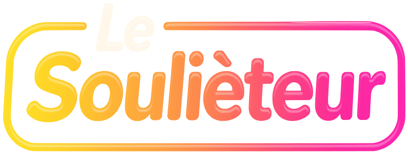

<!doctype html>
<html lang="fr">
<head>
<meta charset="utf-8">
<meta name="viewport" content="width=device-width,initial-scale=1,viewport-fit=cover">
<meta name="theme-color" content="#0F0C14">
<meta name="description" content="Le jeu de cartes qui gâche les repas de famille. De 2 à 12 joueurs, un téléphone chacun.">
<meta name="mobile-web-app-capable" content="yes">
<title>Le Soulièteur</title>
<meta property="og:type" content="website">
<meta property="og:title" content="Le Soulièteur">
<meta property="og:description" content="Le jeu de cartes qui gâche les repas de famille. De 2 à 12 joueurs, un téléphone chacun.">
<meta property="og:image" content="icon-512.png">
<meta name="twitter:card" content="summary_large_image">
<meta name="twitter:title" content="Le Soulièteur">
<meta name="twitter:description" content="Le jeu de cartes qui gâche les repas de famille. De 2 à 12 joueurs, un téléphone chacun.">
<meta name="twitter:image" content="icon-512.png">
<link rel="icon" type="image/png" sizes="32x32" href="favicon-32.png">
<link rel="apple-touch-icon" href="icon-180.png">
<link rel="manifest" href="manifest.webmanifest">
<meta name="apple-mobile-web-app-title" content="Le Soulièteur">
<meta name="apple-mobile-web-app-status-bar-style" content="black-translucent">
<link rel="preconnect" href="https://fonts.googleapis.com">
<link rel="preconnect" href="https://fonts.gstatic.com" crossorigin>
<link href="https://fonts.googleapis.com/css2?family=Bricolage+Grotesque:opsz,wght@12..96,400&display=swap" rel="stylesheet">
<script src="./vendor/supabase.js"></script>
<style>
/* ===== Jetons ===== */
:root{
  /* Fond : une encre prune presque neutre. L'ancien violet saturé et ses
     taches magenta faisaient vibrer le rose et le doré posés dessus, et
     brouillaient tout ce qui était translucide. */
  --bg-0:#0F0C14; --bg-1:#18131F;
  /* Surfaces opaques, en trois paliers : un panneau, une ligne ou un champ se
     détache net du fond, quelle que soit la lueur derrière. */
  --surface:#1F1A27; --surface-2:#2B2434; --field:#15111B;
  --hairline:#352D40; --hairline-2:#4B425A;
  --ink:#1C1622; --ink-soft:#5E5468;
  /* Réponses : papier blanc chaud. Assez clair pour trancher sur le doré des
     phrases, assez chaud pour ne pas faire écran blanc sur le fond sombre. */
  --paper:#FFF6E6; --paper-2:#F7E7CC; --paper-edge:#CFB48A;
  /* Trois accents, trois rôles : doré = sélection et repères, rose = action
     principale, menthe = validé. Chaque texte posé dessus tient l'AA (4,5:1). */
  --gold:#FFC23D; --gold-2:#F5A623; --gold-deep:#9C6200; --gold-soft:#FFD36B;
  /* La phrase à trou est dorée partout : au choix du lecteur, pendant qu'on la
     complète, à la lecture et jusqu'à la révélation. Les réponses en main
     restent en papier clair, ce qui sépare d'un coup d'œil l'énoncé et les cartes. */
  --gold-paper:#FFD54D; --gold-paper-2:#FFE58F;
  --gold-ink:#2E1C00; --gold-ink-soft:#5A3F12;
  --pop:#FF5C8D; --pop-2:#E0215B; --pop-3:#C4134C; --pop-deep:#7E0E33; --pop-soft:#FF8AAE;
  --mint:#3FDC9C; --mint-2:#1FBF80; --mint-deep:#0B6B47; --mint-ink:#04281B;
  --violet-soft:#C4B2FF;
  /* Trois niveaux de texte, tous au-dessus de 7:1 sur le fond et les surfaces. */
  --text:#F7F4FA; --text-dim:#DDD6E5; --text-faint:#B9B0C6;
  --r-sm:12px; --r-md:18px; --r-lg:26px; --r-pill:999px;
  --shadow-card:0 2px 2px rgba(0,0,0,.18), 0 12px 28px -6px rgba(0,0,0,.55);
  --shadow-lift:0 22px 50px -12px rgba(0,0,0,.7);
  --dur:.18s; --ease:cubic-bezier(.2,.8,.3,1);
  font-family:"Bricolage Grotesque",ui-rounded,"Segoe UI",system-ui,-apple-system,sans-serif;
  font-optical-sizing:auto
}
*{box-sizing:border-box}
/* Aucun gras : toute l'appli est rendue en graisse normale, y compris les
   titres, les boutons et les <b> que le navigateur met en gras par défaut. */
html,body,h1,h2,h3,h4,h5,h6,b,strong,th,button,input,select,textarea{font-weight:400}
html{min-height:100%;background:var(--bg-0)}
body{margin:0;min-height:100%;background:transparent;color:var(--text);font-size:17px;line-height:1.45;-webkit-tap-highlight-color:transparent;-webkit-font-smoothing:antialiased}
/* calques de fond fixes : couvrent toujours la fenêtre, sans background-attachment (bogué sur iOS) */
body::before,body::after{content:"";position:fixed;inset:0;z-index:0;pointer-events:none}
body::before{background:
  radial-gradient(90% 46% at 50% -10%, rgba(110,52,150,.28) 0%, rgba(110,52,150,0) 72%),
  radial-gradient(60% 36% at 104% 0%, rgba(224,33,91,.10) 0%, rgba(224,33,91,0) 70%),
  linear-gradient(180deg,var(--bg-1) 0%, var(--bg-0) 55%)}
body::after{opacity:.34;mix-blend-mode:overlay;
  background-image:url("data:image/svg+xml,%3Csvg xmlns='http://www.w3.org/2000/svg' width='160' height='160'%3E%3Cfilter id='n'%3E%3CfeTurbulence type='fractalNoise' baseFrequency='.85' numOctaves='3' stitchTiles='stitch'/%3E%3C/filter%3E%3Crect width='160' height='160' filter='url(%23n)' opacity='.42'/%3E%3C/svg%3E")}
/* La réserve du bas doit valoir la hauteur RÉELLE de la barre d'action : une
   valeur devinée laisse le bouton recouvrir la fin du contenu dès qu'il y a
   deux boutons ou une police plus grande. --dock-h est mesuré après chaque
   rendu (voir fitDock) et contient déjà l'encoche du bas. */
main{position:relative;z-index:1;max-width:520px;margin:0 auto;
  padding:calc(30px + env(safe-area-inset-top)) 18px calc(var(--dock-h,150px) + 18px)}
h1,h2,h3{margin:0;line-height:1.05;letter-spacing:-.03em}
p{margin:0}
button,input,select,textarea{font:inherit;color:inherit}
button{cursor:pointer;border:0;background:none}
:focus-visible{outline:3px solid var(--gold);outline-offset:3px;border-radius:6px}
.muted{color:var(--text-dim)}
.eyebrow{font-size:12px;letter-spacing:.16em;text-transform:uppercase;color:var(--text-faint)}

/* ===== Accueil (tient sur un écran, sans défilement) ===== */
body.is-home main,body.no-dock main{padding-bottom:calc(18px + env(safe-area-inset-bottom))}
/* La hauteur doit retrancher exactement les marges de main, sinon le bloc
   dépasse l'écran : il se centre alors trop bas et laisse un grand vide en
   haut, avec du défilement en prime. */
.home{--pad:calc(30px + 18px + env(safe-area-inset-top) + env(safe-area-inset-bottom));
  min-height:calc(100vh - var(--pad));min-height:calc(100dvh - var(--pad));
  display:flex;flex-direction:column;justify-content:center;gap:22px;
  padding-bottom:7vh}  /* centrage optique : à égalité parfaite le bloc paraît trop bas */
.home-top{display:flex;justify-content:flex-end;margin-bottom:-8px}
.iconbtn{display:inline-flex;align-items:center;gap:7px;min-height:44px;padding:8px 16px 8px 13px;border-radius:var(--r-pill);
  background:var(--surface);border:1px solid var(--hairline);color:var(--text-dim);
  font-size:13px;letter-spacing:.08em;text-transform:uppercase}
.iconbtn svg{width:15px;height:15px;stroke:currentColor;fill:none;stroke-width:1.9}
.iconbtn:active{background:var(--surface-2);color:var(--text)}
/* Le titre est un tracé vectoriel : net à n'importe quelle taille d'écran et à
   n'importe quel zoom, contrairement à l'image d'origine que le navigateur
   devait étirer. Le plafond en vh garde l'accueil sur un seul écran. */
.home h1{margin:0;position:relative}
/* halo doux qui respire derrière le logo */
.home h1::before{content:"";position:absolute;left:50%;top:50%;width:78%;height:150%;transform:translate(-50%,-50%);
  z-index:-1;pointer-events:none;border-radius:50%;
  background:radial-gradient(closest-side,rgba(255,194,61,.22),rgba(255,92,141,.10) 55%,transparent 72%);
  filter:blur(14px);animation:halo 5.5s ease-in-out infinite}
@keyframes halo{0%,100%{opacity:.55;transform:translate(-50%,-50%) scale(.96)}50%{opacity:.9;transform:translate(-50%,-50%) scale(1.06)}}
.home h1 img{display:block;width:min(100%,340px,38vh);height:auto;margin:0 auto;position:relative}
/* Amorçage : le titre s'allume comme un tube — deux hésitations, puis il
   tient. Joué une fois, à l'arrivée sur l'accueil, jamais en boucle. */
.home h1{animation:ignite 1.3s both}
@keyframes ignite{
  0%{opacity:0}
  8%{opacity:.9}   11%{opacity:.08}
  19%{opacity:.75} 23%{opacity:.12}
  34%{opacity:1}   38%{opacity:.45}
  46%,100%{opacity:1}
}
/* Le dégradé qui migre : un ruban repris de la palette du logo, découpé par le
   logo lui-même (le masque), qui glisse lentement. Seules les couleurs se
   déplacent — la forme ne bouge pas d'un pixel et rien ne peut sortir des
   lettres, le masque s'en charge. En « color », le ruban ne donne que sa
   teinte : le modelé et les ombres du tracé restent ceux du logo. */
.home h1 .shift{position:absolute;top:0;left:50%;transform:translateX(-50%);
  width:min(100%,340px,38vh);aspect-ratio:801/303;pointer-events:none;
  background:linear-gradient(100deg,#FEDD26,#FC4184,#FC27AB,#FD854F,#FEDD26);
  background-size:280% 100%;opacity:.38;mix-blend-mode:color;
  -webkit-mask:url(logo.svg) center/contain no-repeat;mask:url(logo.svg) center/contain no-repeat;
  animation:migrate 16s linear infinite}
@keyframes migrate{to{background-position:280% 0}}

/* barre à deux onglets */
.tabs{display:grid;grid-auto-flow:column;grid-auto-columns:1fr;gap:5px;padding:5px;background:var(--surface);
  border:1.5px solid var(--hairline);border-radius:var(--r-pill)}
.tab{padding:13px 6px;border-radius:var(--r-pill);font-size:clamp(13px,3.6vw,15px);
  white-space:nowrap;color:var(--text-dim);
  transition:background var(--dur),color var(--dur),transform var(--dur)}
.tab.on{background:linear-gradient(180deg,var(--gold),var(--gold-2));color:var(--gold-ink);
  box-shadow:0 3px 10px -4px rgba(0,0,0,.6)}
.tab:active{transform:scale(.97)}
.pane[hidden]{display:none}
.home .panel{margin-top:0}

/* ===== Panneaux & champs ===== */
.panel{position:relative;background:var(--surface);border:1px solid var(--hairline);border-radius:var(--r-lg);
  padding:22px;margin-top:16px;box-shadow:0 1px 0 rgba(255,255,255,.04) inset, 0 18px 40px -24px rgba(0,0,0,.9)}
.panel h2{font-size:25px;margin:6px 0 18px}
.panel .eyebrow{color:var(--gold)}
label,.field{display:block;margin-bottom:16px}
label>span,.field>span{display:block;font-size:12px;letter-spacing:.12em;
  text-transform:uppercase;color:var(--text-faint);margin-bottom:8px}
input,textarea{display:block;width:100%;padding:14px 16px;border-radius:var(--r-sm);background:var(--field);
  border:1.5px solid var(--hairline-2);font-size:17px;transition:border-color var(--dur),background var(--dur)}
input::placeholder,textarea::placeholder{color:var(--text-faint)}
input:focus,textarea:focus{outline:none;border-color:var(--gold);background:var(--bg-1)}
/* la hauteur est pilotée par autoGrow : ni poignée, ni barre de défilement */
textarea{resize:none;overflow:hidden;line-height:1.35}
#j-code{text-align:center;letter-spacing:.42em;text-indent:.42em;font-size:30px;padding:16px 14px}
.seg{display:grid;grid-template-columns:repeat(4,1fr);gap:6px;padding:5px;background:var(--field);
  border:1.5px solid var(--hairline);border-radius:var(--r-sm)}
.seg-b{padding:11px 4px;border-radius:9px;font-size:16px;color:var(--text-dim);
  transition:background var(--dur),color var(--dur),transform var(--dur)}
.seg-b.on{background:var(--gold);color:var(--gold-ink);box-shadow:0 2px 8px -3px rgba(0,0,0,.6)}
.seg-b:active{transform:scale(.95)}
.seg.s2{grid-template-columns:1fr 1fr}
.seg.s3{grid-template-columns:repeat(3,1fr)}
.seg.who{margin-bottom:18px}
.seg.who .seg-b{display:flex;flex-direction:column;align-items:center;gap:1px;min-width:0;padding:9px 4px}
.seg.who .seg-b span{max-width:100%;overflow:hidden;text-overflow:ellipsis;white-space:nowrap}
.seg.who .seg-b small{font-size:11px;letter-spacing:.08em;text-transform:uppercase;opacity:.75}
/* .field impose display:block, qui l'emporterait sur l'attribut hidden */
.field[hidden]{display:none}

/* ===== Boutons ===== */
.btn{display:flex;align-items:center;justify-content:center;gap:9px;width:100%;border-radius:var(--r-pill);
  padding:16px 22px;font-size:18px;letter-spacing:-.01em;
  background:linear-gradient(180deg,var(--pop-2),var(--pop-3));color:#fff;font-weight:600;text-shadow:0 1px 1px rgba(0,0,0,.25);
  box-shadow:0 5px 0 var(--pop-deep), 0 16px 30px -14px rgba(224,33,91,.5);
  transition:transform .08s var(--ease),box-shadow .08s var(--ease),filter var(--dur)}
.btn:active:not(:disabled){transform:translateY(4px);box-shadow:0 1px 0 var(--pop-deep),0 8px 16px -12px rgba(224,33,91,.5)}
.btn.alt{background:linear-gradient(180deg,var(--gold),var(--gold-2));color:var(--gold-ink);
  box-shadow:0 5px 0 var(--gold-deep), 0 16px 30px -14px rgba(255,194,61,.4)}
.btn.alt:active:not(:disabled){box-shadow:0 1px 0 var(--gold-deep),0 8px 16px -12px rgba(255,194,61,.4)}
.btn.ghost{background:var(--surface);color:var(--text);border:1.5px solid var(--hairline-2);box-shadow:none}
.btn.ghost:active:not(:disabled){transform:translateY(2px);background:var(--surface-2)}
.btn.on{background:linear-gradient(180deg,var(--mint),var(--mint-2));color:var(--mint-ink);
  box-shadow:0 5px 0 var(--mint-deep),0 16px 30px -14px rgba(63,220,156,.4)}
.btn.alt,.btn.on,.btn.ghost{text-shadow:none}
/* Désactivé : un aplat neutre au texte lisible, plutôt qu'un bouton rose à
   moitié transparent dont on devait deviner le libellé (« Il manque 1 joueur »,
   « En attente des autres… » sont des informations, pas du décor). Le bouton
   touché, lui, garde sa couleur pendant l'envoi (.pending). */
.btn:disabled:not(.pending){background:var(--surface-2);color:var(--text-faint);text-shadow:none;
  box-shadow:inset 0 0 0 1.5px var(--hairline-2);cursor:default}
.btn:disabled{cursor:default}
.btn.pending{opacity:.72;box-shadow:none;transform:translateY(2px)}
.btn+.btn{margin-top:10px}
.link{color:var(--text-dim);padding:8px 10px;font-size:14px;border-radius:var(--r-pill);
  transition:color var(--dur),background var(--dur)}
.link:active{color:var(--text);background:var(--surface)}

/* ===== Barre du haut ===== */
.top{display:flex;justify-content:space-between;align-items:center;gap:10px;margin:2px 0 14px}
.top-l{display:flex;align-items:center;gap:8px;min-width:0}
.code{display:inline-flex;align-items:center;gap:7px;font-size:15px;letter-spacing:.22em;
  background:var(--surface);border:1px solid var(--hairline);padding:6px 10px 6px 12px;border-radius:10px}
.code::before{content:"";width:6px;height:6px;border-radius:50%;background:var(--mint);box-shadow:0 0 8px var(--mint);letter-spacing:0}
.round{font-size:13px;color:var(--text-dim);white-space:nowrap}

/* ===== Cartes ===== */
/* Deux lignes réservées : la carte tombe à la même hauteur que l'énoncé fasse
   une ou deux lignes, sinon elle saute d'un écran à l'autre. */
.role{font-size:17px;color:var(--text-dim);margin:2px 0 14px;max-width:34ch;min-height:2.9em}
.role b{color:var(--text)}
h2.title{font-size:27px;margin:2px 0 14px}
.qcard{position:relative;background:linear-gradient(168deg,var(--gold-paper-2) 0%,var(--gold-paper) 44%,var(--gold) 100%);
  color:var(--gold-ink);border-radius:20px;padding:16px 20px 24px;min-height:150px;
  box-shadow:0 4px 0 var(--gold-deep),var(--shadow-card);
  transform:rotate(-1deg);display:flex;flex-direction:column;gap:10px}
.qcard::after{content:"";position:absolute;inset:0;border-radius:20px;pointer-events:none;
  box-shadow:inset 0 0 0 1px rgba(46,28,0,.16), inset 0 0 0 7px rgba(46,28,0,.05)}
.qcard .qtag{font-size:10px;letter-spacing:.18em;text-transform:uppercase;color:var(--gold-ink-soft)}
.qcard .qtext{font-size:clamp(21px,5.9vw,27px);line-height:1.24;letter-spacing:-.02em}
.qcard .by{display:flex;align-items:center;gap:7px;font-size:14px;color:var(--gold-ink-soft);margin-top:2px}
.qcard.sticky{position:sticky;top:8px;z-index:3;box-shadow:0 4px 0 var(--gold-deep),var(--shadow-lift)}
/* La carte gagnante garde le doré : c'est l'anneau menthe qui dit « gagné »,
   comme l'anneau menthe de la carte que le lecteur vient de choisir. */
.qcard.win{transform:rotate(.8deg);
  box-shadow:0 0 0 3px var(--mint),0 4px 0 var(--gold-deep),0 18px 42px -14px rgba(63,220,156,.4)}
.qcard.win .qtag{color:#08533A}
.blank{display:inline-block;width:4.2em;border-bottom:4px solid rgba(46,28,0,.75);margin:0 .06em}
.fill{background:var(--pop);color:var(--ink);padding:.02em .2em;border-radius:6px;
  -webkit-box-decoration-break:clone;box-decoration-break:clone}
/* Sur le doré, le trou comblé se lit mieux en pastille encre qu'en rose. */
.qcard .fill,.scard .fill,.qchoice .fill{background:var(--ink);color:var(--gold-paper)}
.hand,.subs,.qchoices{list-style:none;padding:0;margin:20px 0 0;display:grid;gap:10px}
.acard,.scard,.qchoice{display:block;width:100%;text-align:left;border-radius:15px;padding:15px 17px;
  font-size:18px;line-height:1.32;letter-spacing:-.01em}
.acard{color:var(--ink);background:linear-gradient(170deg,var(--paper),var(--paper-2))}
/* Les réponses sont stockées en minuscule, prêtes à s'insérer en milieu de
   phrase ; seule leur présentation en carte reprend une majuscule. */
.acard::first-letter{text-transform:uppercase}
.acard{position:relative;box-shadow:0 3px 0 var(--paper-edge),0 8px 18px -10px rgba(0,0,0,.6);
  transition:transform .14s var(--ease),box-shadow .14s var(--ease),background .14s;
  touch-action:pan-y;user-select:none;-webkit-user-select:none}
.acard.dragging{transition:none;cursor:grabbing}
/* zone de balayage : les repères sont sous la carte, révélés quand elle glisse */
.swipe{position:relative;border-radius:15px}
.swipe .cue{position:absolute;inset:0;display:flex;align-items:center;padding:0 18px;border-radius:15px;font-size:14px;letter-spacing:.12em;text-transform:uppercase;opacity:0;pointer-events:none}
.swipe .cue span{display:inline-flex;align-items:center;gap:7px;padding:7px 13px;border-radius:var(--r-pill);
  transition:transform .12s var(--ease)}
.swipe .cue.play{justify-content:flex-start;background:linear-gradient(90deg,rgba(63,220,156,.45),transparent 72%)}
.swipe .cue.play span{background:var(--mint);color:var(--mint-ink)}
.swipe .cue.drop{justify-content:flex-end;background:linear-gradient(270deg,rgba(255,194,61,.4),transparent 72%)}
.swipe .cue.drop span{background:var(--gold);color:var(--gold-ink)}
.swipe .cue.armed span{transform:scale(1.14)}
.swipehint{margin:14px 0 -4px;color:var(--text-faint);font-size:14px;text-align:center}
.swipehint b{color:var(--text)}
.acard::before{content:"";position:absolute;left:0;top:11px;bottom:11px;width:4px;border-radius:0 4px 4px 0;
  background:var(--paper-edge);transition:background .14s,width .14s}
.acard:active{transform:translateY(3px);box-shadow:0 0 0 var(--paper-edge),0 4px 10px -8px rgba(0,0,0,.6)}
.acard.sel{background:linear-gradient(170deg,var(--pop-2),var(--pop-3));color:#fff;transform:translateX(7px) rotate(.7deg);
  box-shadow:0 3px 0 var(--pop-deep),0 14px 26px -12px rgba(224,33,91,.55)}
.acard.sel::before{background:#fff;width:5px}
.acard .rang{display:inline-flex;align-items:center;justify-content:center;width:22px;height:22px;margin-right:9px;
  border-radius:50%;background:#fff;color:var(--pop-3);font-weight:700;font-style:normal;font-size:13px;
  vertical-align:-3px}
.scard{position:relative;color:var(--gold-ink);background:linear-gradient(170deg,var(--gold-paper-2),var(--gold-paper));
  box-shadow:0 3px 0 var(--gold-deep),0 8px 18px -12px rgba(0,0,0,.55)}
button.scard{transition:transform .14s var(--ease),box-shadow .14s var(--ease)}
button.scard:active{transform:translateY(2px)}
.scard.sel{background:linear-gradient(168deg,var(--gold-paper-2),var(--gold) 130%);
  box-shadow:0 0 0 3px var(--mint),0 3px 0 var(--gold-deep),0 14px 30px -12px rgba(63,220,156,.4)}
.scard .by{display:flex;align-items:center;gap:7px;font-size:14px;color:var(--gold-ink-soft);margin-top:9px}
.qchoice{color:var(--gold-ink);background:linear-gradient(168deg,var(--gold-paper-2),var(--gold));font-size:19px;line-height:1.26;
  padding:18px;box-shadow:0 3px 0 var(--gold-deep),0 10px 22px -12px rgba(0,0,0,.6);
  transition:transform .14s var(--ease),box-shadow .14s var(--ease)}
.qchoice:active{transform:translateY(3px);box-shadow:0 0 0 var(--gold-deep),0 6px 12px -10px rgba(0,0,0,.5)}
/* Les phrases écartées passent en surface neutre, texte encore lisible : un
   doré à demi transparent virait au gris-brun sur le fond sombre. */
.qchoice.off{background:var(--surface);color:var(--text-faint);box-shadow:inset 0 0 0 1px var(--hairline);cursor:default}
.qchoice.off .blank{border-bottom-color:var(--hairline-2)}
.qchoice.on{box-shadow:0 0 0 3px var(--mint),0 3px 0 var(--gold-deep),0 14px 30px -12px rgba(63,220,156,.4)}
.deal{animation:deal .5s var(--ease) both}
@keyframes deal{from{transform:translateY(-34px) rotate(-9deg) scale(.96);opacity:0}}
.hand.deal-in li{animation:rise .42s var(--ease) both;animation-delay:calc(var(--i)*45ms)}
@keyframes rise{from{transform:translateY(16px);opacity:0}}

/* ===== Salon ===== */
/* Le code et l'invitation se partagent la largeur, à hauteur égale. */
.lobbytop{display:grid;grid-template-columns:1fr 1fr;gap:12px;align-items:stretch;margin:6px 0 18px}
.lobbytop .invite{height:100%;margin:0;padding:16px;border-radius:var(--r-lg);
  font-size:16px;line-height:1.25;text-align:center;text-wrap:balance}
.codeblock{min-width:0}
.bigcode{display:flex;gap:6px;margin-top:10px}
.bigcode .ch{flex:1;display:grid;place-items:center;aspect-ratio:3/4;max-height:104px;border-radius:14px;
  font-size:clamp(20px,5.4vw,28px);color:var(--gold);
  background:linear-gradient(170deg,rgba(255,194,61,.14),rgba(255,194,61,.04)),var(--surface);
  border:1.5px solid rgba(255,194,61,.45);text-shadow:0 2px 12px rgba(255,194,61,.25)}
.sec{font-size:14px;letter-spacing:.14em;text-transform:uppercase;color:var(--text-faint);margin:26px 0 12px}
.plist{list-style:none;padding:0;margin:0 0 16px;display:grid;gap:8px}
.plist li{display:flex;justify-content:space-between;align-items:center;gap:10px;min-height:56px;padding:8px 10px 8px 12px;
  border-radius:var(--r-md);background:var(--surface);border:1px solid var(--hairline);font-size:17px}
.plist li.is-ready{border-color:rgba(63,220,156,.45);background:linear-gradient(90deg,rgba(63,220,156,.12),var(--surface) 60%),var(--surface)}
.plist .who{display:flex;align-items:center;gap:8px;min-width:0;flex:1}
.plist .nm{overflow:hidden;text-overflow:ellipsis;white-space:nowrap;min-width:2.5em}
.plist .rt{display:flex;align-items:center;gap:6px;flex:none}
.plist li.empty{background:transparent;border-style:dashed;border-color:var(--hairline-2);color:var(--text-faint);
  font-size:15px;justify-content:center;min-height:48px}
.state{font-size:12px;letter-spacing:.1em;text-transform:uppercase;padding:5px 10px;border-radius:var(--r-pill)}
.state.yes{background:rgba(63,220,156,.16);color:var(--mint)}
.state.no{background:var(--surface-2);color:var(--text-dim)}
.tag{flex:none;font-size:11px;background:var(--surface-2);color:var(--text-dim);border-radius:6px;padding:3px 7px;letter-spacing:.06em;text-transform:uppercase;white-space:nowrap}
.tag.host{background:rgba(255,194,61,.16);color:var(--gold-soft)}
.meta{display:flex;align-items:center;gap:8px;color:var(--text-faint);font-size:14px}

/* choix du jeu, dans le salon */
.gamebox{margin-top:0;padding:18px}
.gamebox .field{margin:14px 0 0}
.gamebox .gname{font-size:22px;margin:2px 0 6px}
.gamebox .gdesc{font-size:15px;line-height:1.4;color:var(--text-dim);margin-top:12px}
.gamebox .gname+.gdesc{margin-top:0}

/* ===== Priorités ===== */
/* Le classement en cours : cinq marches, la 1 en haut. Une marche vide est
   un pointillé ; une carte posée reprend la carte rose « choisie ». */
.ladder-end{font-size:12px;letter-spacing:.14em;text-transform:uppercase;color:var(--gold);font-weight:600;margin:14px 0 8px 40px}
.ladder+.ladder-end{margin:8px 0 0 40px}
.ladder{list-style:none;padding:0;margin:0;display:grid;gap:8px}
.ladder li{display:flex;align-items:center;gap:10px}
.num{flex:none;width:30px;height:30px;border-radius:50%;display:grid;place-items:center;font-size:15px;
  background:var(--surface-2);color:var(--text-dim);font-variant-numeric:tabular-nums}
.ladder li.full .num{background:var(--gold);color:var(--gold-ink);font-weight:600}
.ladder .slot{flex:1;min-height:52px;border-radius:15px;border:1.5px dashed var(--hairline-2)}
.ladder .acard{flex:1;width:auto;padding:13px 16px;font-size:17px}
/* cartes classées : papier clair + encre sombre, bien lisibles sur le fond */
.ladder .acard.sel{transform:none;background:linear-gradient(170deg,#FFFBF3,var(--paper));color:var(--ink);
  box-shadow:0 3px 0 var(--paper-edge),0 8px 18px -10px rgba(0,0,0,.6)}
.ladder .acard.sel::before{background:var(--pop)}
.ladder li.ok .num{background:var(--mint);color:var(--mint-ink)}
.ladder li.ok .acard{box-shadow:0 0 0 3px var(--mint),0 3px 0 var(--paper-edge)}
/* à un rang près : 1 point, anneau doré */
.ladder li.near .num{background:var(--gold);color:var(--gold-ink)}
.ladder li.near .acard{box-shadow:0 0 0 3px var(--gold),0 3px 0 var(--paper-edge)}
.ladder li.ko .acard{opacity:.5;filter:saturate(.4)}
/* glisser-déposer : la carte saisie suit le doigt, la marche visée s'allume */
.ladder .acard,.hand .acard[data-act="rank"]{-webkit-touch-callout:none;cursor:grab}
.acard.rank-float{position:fixed;left:0;top:0;z-index:50;margin:0;pointer-events:none;transition:none;
  background:linear-gradient(170deg,#FFFBF3,var(--paper));color:var(--ink);padding:13px 16px;font-size:17px;
  box-shadow:0 3px 0 var(--paper-edge),0 18px 30px -12px rgba(0,0,0,.75)}
.acard.rank-src{opacity:.3}
.ladder li.over .slot{border-color:var(--gold);background:rgba(255,194,61,.12)}
.ladder li.over .acard{box-shadow:0 0 0 3px var(--gold),0 3px 0 var(--paper-edge)}
.ladder li.over .num{background:var(--gold);color:var(--gold-ink)}
/* le classement du juge, révélé : doré comme la phrase du jeu d'origine */
.truth{list-style:none;padding:0;margin:0;display:grid;gap:12px}
.truth li{display:grid;grid-template-columns:30px 1fr;gap:7px 10px;align-items:center}
.truth .num{background:var(--gold);color:var(--gold-ink)}
.truth .scard{padding:13px 16px;font-size:17px}
.truth .scard::first-letter{text-transform:uppercase}
.found{grid-column:2;display:flex;flex-wrap:wrap;gap:6px;font-size:13px;color:var(--text-faint)}
.found .chip{padding:3px 10px;font-size:13px}
.found .chip.hit{border-color:rgba(63,220,156,.45);background:rgba(63,220,156,.12);color:var(--mint)}
.rank b.plus{color:var(--mint)}
.rank .tag{margin-left:2px}

/* ===== Baromètre ===== */
/* Le cadran : un demi-disque crème, la cible en trois bandes (2, 3, 4 points),
   les aiguilles partent du moyeu. Les deux extrêmes de la carte encadrent le
   cadran, comme les étiquettes posées de part et d'autre du vrai jeu. */
.dialbox{margin:18px 0 0}
.dial{display:block;width:100%;height:auto;touch-action:none;user-select:none;-webkit-user-select:none;overflow:visible}
.dial.drag{cursor:grab}
.dial .face{fill:var(--paper)}
.dial .rim{fill:none;stroke:var(--paper-edge);stroke-width:3}
/* La cible se lit comme le logo, du jaune au rose : plus c'est chaud, plus
   ça rapporte. Une seule progression, au lieu de trois couleurs sans ordre
   qui se confondaient avec les aiguilles des joueurs. */
.dial .b2{fill:#FFD873} .dial .b3{fill:#FFA93D} .dial .b4{fill:var(--pop)}
.dial .bn{font-size:9px;fill:var(--ink);text-anchor:middle;dominant-baseline:middle}
.dial .ndl{stroke-width:3.4;stroke-linecap:round}
.dial .ndl.me{stroke:var(--ink);stroke-width:4.4}
/* contour sombre sous chaque aiguille colorée : sinon elle se perd dans la bande de même teinte */
.dial .halo{stroke:var(--ink);stroke-width:6.4;stroke-linecap:round}
.dial .tip{stroke:var(--ink);stroke-width:1.5}
.dial .hub{fill:var(--pop-2);stroke:var(--ink);stroke-width:1.5}
.wlabs{display:flex;justify-content:space-between;gap:12px;margin-top:10px}
.wlab{max-width:48%;padding:8px 13px;border-radius:12px;background:#fff;color:var(--ink);font-size:15px;line-height:1.2;
  box-shadow:0 3px 0 rgba(0,0,0,.25)}
.wlab.r{text-align:right}
.legend{display:flex;flex-wrap:wrap;gap:6px;margin-top:14px}
.legend .chip i{width:12px;height:12px;border-radius:50%;margin-left:4px}
.qcard.clue{min-height:0}

/* catalogue admin */
/* La barre des jeux est coupée en trois parts égales : sur un écran étroit, un
   libellé long passe sur deux lignes au lieu d'élargir sa part. */
.tabs.jeux{grid-auto-columns:minmax(0,1fr)}
.tabs.jeux .tab{padding:14px 3px;font-size:clamp(11.5px,3.1vw,14px);letter-spacing:-.01em;
  line-height:1.2;white-space:normal;text-wrap:balance}
/* Les catalogues du jeu : un cran sous la barre, en onglets soulignés. */
.soustabs{display:flex;gap:26px;margin:14px 6px 0;border-bottom:1px solid var(--hairline)}
.soustab{position:relative;padding:12px 0;font-size:13px;letter-spacing:.14em;text-transform:uppercase;
  color:var(--text-faint);transition:color var(--dur)}
.soustab.on{color:var(--gold)}
.soustab.on::after{content:"";position:absolute;left:0;right:0;bottom:-1px;height:2px;border-radius:2px;background:var(--gold)}
.catlist .sep{color:var(--text-faint)}
.holebar{display:flex;align-items:center;gap:12px;margin:-4px 0 14px}
.btn.small{width:auto;flex:none;padding:10px 16px;font-size:15px}
.searchfield{display:block;width:100%;margin:0 0 12px}
.catlist{list-style:none;padding:0;margin:0;display:grid;gap:8px}
.catlist li{display:flex;align-items:flex-start;gap:10px;padding:12px 10px 12px 14px;border-radius:var(--r-md);
  background:var(--surface);border:1px solid var(--hairline);font-size:16px;line-height:1.35}
.catlist .ct{flex:1;min-width:0;overflow-wrap:anywhere}
.catlist .form{flex:none;min-width:30px;height:30px;padding:0 7px;border-radius:9px;font-size:12px;
  border:1.5px solid var(--hairline-2);background:var(--field);color:var(--text-dim)}
.catlist .form.v{background:rgba(63,220,156,.16);border-color:rgba(63,220,156,.5);color:var(--mint)}
.catlist .form.n{background:rgba(255,194,61,.14);border-color:rgba(255,194,61,.5);color:var(--gold-soft)}
.catlist .form.theme{display:inline-flex;align-items:center;letter-spacing:.02em;
  background:rgba(255,92,141,.14);border-color:rgba(255,92,141,.5);color:var(--pop-soft)}
.catlist .form.two{display:inline-flex;align-items:center;letter-spacing:.02em;
  background:rgba(155,123,255,.18);border-color:rgba(155,123,255,.55);color:var(--violet-soft)}
.catlist .del{flex:none;width:32px;height:32px;border-radius:50%;background:rgba(255,92,141,.16);
  color:var(--pop-soft);font-size:19px;line-height:1;display:grid;place-items:center}
.catlist .del:active{background:var(--pop);color:var(--ink)}
.catlist li.empty{justify-content:center;color:var(--text-faint);border-style:dashed}
#cat-more{margin-top:12px}

/* attente + progression */
.waiting{display:flex;flex-wrap:wrap;align-items:center;gap:7px;margin-top:16px;color:var(--text-faint);
  font-size:14px}
.chip{display:inline-flex;align-items:center;gap:6px;background:var(--surface);border:1px solid var(--hairline);
  border-radius:var(--r-pill);padding:4px 11px 4px 5px;color:var(--text-dim);font-size:14px}
.bar{height:6px;border-radius:99px;background:var(--surface-2);overflow:hidden;margin-top:14px}
.bar i{display:block;height:100%;border-radius:99px;background:linear-gradient(90deg,var(--gold),var(--mint));
  transition:width .35s var(--ease)}
.steps{display:flex;gap:6px;margin:14px 0 0}
.steps i{flex:1;height:4px;border-radius:99px;background:var(--surface-2)}
.steps i.on{background:var(--gold)}

/* ===== Attente & roue ===== */
/* La roue occupe seule l'écran : on retranche les marges de main et la barre
   du haut pour la centrer dans ce qui reste, au lieu de la coller en haut. */
.wheelWrap{--pad:calc(30px + 18px + 58px + env(safe-area-inset-top) + env(safe-area-inset-bottom));
  min-height:calc(100vh - var(--pad));min-height:calc(100dvh - var(--pad));
  display:flex;flex-direction:column;justify-content:center;text-align:center;padding:10px 0 4px}
.waitScreen{display:flex;flex-direction:column;align-items:center;justify-content:center;text-align:center;
  min-height:64vh;gap:8px;padding:10px 0}
.cardback{position:relative;width:118px;height:150px;border-radius:16px;margin-bottom:24px;
  background:repeating-linear-gradient(135deg,#EBD3A8 0 8px,var(--paper) 8px 16px);
  box-shadow:var(--shadow-card);animation:float 3.4s ease-in-out infinite}
.cardback::after{content:"";position:absolute;inset:0;border-radius:16px;
  box-shadow:inset 0 0 0 1px rgba(28,22,34,.12),inset 0 0 0 7px rgba(255,255,255,.5)}
.cardback.b2{position:absolute;--dx:-22px;--r1:-14deg;--r2:-8deg;opacity:.6;animation-delay:.25s}
.cardback.b3{position:absolute;--dx:22px;--r1:13deg;--r2:7deg;opacity:.45;animation-delay:.5s}
.cardstack{position:relative;display:grid;place-items:center;margin-bottom:24px}
.cardstack .cardback{margin-bottom:0}
/* le décalage passe par les keyframes : sinon l'animation écrase le transform statique */
@keyframes float{
  0%,100%{transform:translate(var(--dx,0px),0) rotate(var(--r1,-3deg))}
  50%{transform:translate(var(--dx,0px),-12px) rotate(var(--r2,3deg))}
}
.wheelBox{position:relative;width:min(272px,74vw);margin:18px auto 22px;aspect-ratio:1}
.pointer{position:absolute;top:-13px;left:50%;transform:translateX(-50%);z-index:3;width:0;height:0;
  border-left:13px solid transparent;border-right:13px solid transparent;border-top:20px solid var(--gold);
  filter:drop-shadow(0 4px 8px rgba(0,0,0,.6))}
.wheel{position:absolute;inset:0;border-radius:50%;border:7px solid var(--paper);
  box-shadow:0 0 0 2px rgba(0,0,0,.35),0 24px 50px -16px rgba(0,0,0,.85),inset 0 0 40px rgba(0,0,0,.35);
  animation:spin 1.8s cubic-bezier(.1,.7,.1,1) both}
.wheel::after{content:"";position:absolute;inset:36%;border-radius:50%;background:radial-gradient(circle at 40% 35%,var(--surface-2),var(--bg-0));
  box-shadow:inset 0 0 0 2px rgba(255,255,255,.12),0 6px 16px rgba(0,0,0,.6)}
/* un nom par part, posé le long du rayon ; tourne avec la roue, donc le nom
   désigné se retrouve à l'endroit sous la flèche à l'arrêt */
.wheel .lab{position:absolute;inset:0;transform:rotate(var(--a));pointer-events:none}
.wheel .lab i{position:absolute;left:50%;top:50%;margin-left:14.5%;width:34%;
  transform:translateY(-50%);transform-origin:center;
  font-style:normal;font-size:var(--fs,12px);line-height:1.1;letter-spacing:-.015em;
  color:var(--ink);text-align:center;white-space:nowrap;overflow:hidden;text-overflow:ellipsis}
.wheel .lab i.flip{transform:translateY(-50%) rotate(180deg)}
@keyframes spin{from{transform:rotate(0)}to{transform:rotate(var(--spin,1260deg))}}
.bigstate{font-size:clamp(26px,7.6vw,34px);margin-bottom:8px}
.pulse{display:inline-block;width:8px;height:8px;border-radius:50%;background:var(--gold);margin-right:8px;
  animation:pulse 1.4s ease-in-out infinite}
@keyframes pulse{0%,100%{opacity:.25;transform:scale(.8)}50%{opacity:1;transform:scale(1.15)}}

/* ===== Fin ===== */
.bigwin{font-size:clamp(38px,11.5vw,54px);margin:8px 0 20px;letter-spacing:-.045em;
  background:linear-gradient(100deg,var(--gold) 5%,var(--pop) 95%);-webkit-background-clip:text;background-clip:text;color:transparent}
.rank{list-style:none;padding:0;margin:0;display:grid;gap:8px}
.rank li{display:flex;align-items:center;gap:11px;padding:11px 14px;border-radius:var(--r-md);background:var(--surface);
  border:1px solid var(--hairline);font-size:17px}
.rank .pos{width:22px;font-size:14px;color:var(--text-faint);font-variant-numeric:tabular-nums}
.rank .nm{flex:1;display:flex;align-items:center;gap:8px;min-width:0}
.rank .nm span.who{overflow:hidden;text-overflow:ellipsis;white-space:nowrap}
.rank b{color:var(--gold);font-variant-numeric:tabular-nums}
.rank li:first-child{background:linear-gradient(100deg,rgba(255,194,61,.16),rgba(255,92,141,.08)),var(--surface);border-color:rgba(255,194,61,.5)}
.rank li:first-child .pos{color:var(--gold)}
.confetti{position:fixed;inset:0 0 auto;height:0;z-index:2;pointer-events:none}
.confetti i{position:absolute;top:-20px;width:8px;height:12px;border-radius:2px;animation:fall linear forwards}
@keyframes fall{to{transform:translateY(102vh) rotate(720deg);opacity:0}}

/* ===== Bas d'écran ===== */
.dock{position:fixed;left:0;right:0;bottom:0;z-index:5;padding:34px 18px calc(16px + env(safe-area-inset-bottom));
  background:linear-gradient(to top,var(--bg-0) 42%,rgba(15,12,20,.86) 68%,rgba(15,12,20,0))}
.dock::before{content:"";position:absolute;inset:0;pointer-events:none;backdrop-filter:blur(10px);
  -webkit-backdrop-filter:blur(10px);-webkit-mask-image:linear-gradient(to top,#000 55%,transparent);
  mask-image:linear-gradient(to top,#000 55%,transparent)}
.dock>*{position:relative;z-index:1;max-width:484px;margin-left:auto;margin-right:auto}

/* ===== Haut d'écran ===== */
/* En appli installée, la barre d'état d'iOS est translucide et se superpose à
   la page : sans ce voile, le contenu qui défile passe derrière l'heure, le
   réseau et la batterie, et les deux se chevauchent, illisibles. Même
   traitement qu'en bas, retourné. */
.scrim{position:fixed;left:0;right:0;top:0;z-index:6;pointer-events:none;
  height:calc(env(safe-area-inset-top) + 10px);
  background:linear-gradient(to bottom,var(--bg-0) 62%,rgba(15,12,20,.88) 82%,rgba(15,12,20,0))}
.scrim::before{content:"";position:absolute;inset:0;backdrop-filter:blur(10px);
  -webkit-backdrop-filter:blur(10px);-webkit-mask-image:linear-gradient(to bottom,#000 62%,transparent);
  mask-image:linear-gradient(to bottom,#000 62%,transparent)}
.center{text-align:center;padding-top:34vh;color:var(--text-dim)}
.spin{display:block;width:26px;height:26px;margin:0 auto 14px;border-radius:50%;border:3px solid var(--hairline);
  border-top-color:var(--gold);animation:rot .8s linear infinite}
@keyframes rot{to{transform:rotate(360deg)}}
/* Le retrait doit franchir la hauteur du message ET tout ce qui le sépare du
   bord : -180% de sa propre hauteur ne suffisait pas dès que l'encoche
   décalait le point de départ, et le message restait affiché, rogné en haut.
   L'opacité sert de garde-fou si la translation tombe encore juste. */
#toast{position:fixed;left:50%;top:calc(12px + env(safe-area-inset-top));
  transform:translate(-50%,calc(-100% - 24px - env(safe-area-inset-top)));opacity:0;pointer-events:none;
  background:var(--paper);color:var(--ink);padding:13px 18px;border-radius:14px;font-size:15px;
  transition:transform .28s var(--ease),opacity .2s var(--ease);z-index:20;max-width:92vw;text-align:center;
  box-shadow:0 14px 34px rgba(0,0,0,.55)}
#toast.on{transform:translate(-50%,0);opacity:1}

/* ===== Minuteur de phase (anneau qui se vide) ===== */
.cdring{display:inline-flex;width:32px;height:32px}
.cdring svg{width:32px;height:32px;transform:rotate(-90deg)}   /* départ à midi */
.cdring circle{fill:none;stroke-width:3.4}
.cdring .trk{stroke:var(--hairline-2)}
.cdring .arc{stroke:var(--gold);stroke-linecap:round;
  transition:stroke-dashoffset 1s linear,stroke .3s}
.cdring.low .arc{stroke:var(--pop)}
.cdring.low{animation:pulse 1.2s ease-in-out infinite}
/* Sur les très petits écrans, le minuteur prime sur le numéro de manche. */
@media (max-width:360px){.top .round{display:none}}

/* ===== Transition entre écrans (changement de phase seulement) ===== */
#app.enter{animation:screenIn .24s var(--ease)}
@keyframes screenIn{from{opacity:0;transform:translateY(8px)}}

/* ===== « prêt » qui s'installe ===== */
.state.yes{animation:readyPop .32s var(--ease)}
@keyframes readyPop{0%{transform:scale(.7);opacity:.4}60%{transform:scale(1.12)}}

@media (prefers-reduced-motion:reduce){
  *,*::before,*::after{animation-duration:.01ms !important;animation-iteration-count:1 !important;transition-duration:.01ms !important}
  .wheel{transform:rotate(var(--spin,0deg))}
}
</style>
</head>
<body>
<main id="app"></main>
<div class="scrim" aria-hidden="true"></div>
<div id="toast" role="status" aria-live="polite"></div>
<script>
const sb = supabase.createClient('https://yqfewxadpyulgxehhpcu.supabase.co','sb_publishable_Qdso-n_uVYAH1_YzjSLYlQ_rOWg93tg');
const app = document.getElementById('app');
let session = load(), state = null, busy = false, picks = [], picked = null, readIndex = 0, rankView = null;
let last = '', channel = null, poll = null, deb = null, wheelTimer = null, dealPending = false;
let reapTimer = null, tickTimer = null, renderedKey = '', botTimer = null;
let swipe = null, dragging = false, flying = false, pendingRender = false, lastSwipeEnd = 0;
let spinAt = 0;     // instant local où la roue de la phase courante a démarré
const spinning = () => Date.now() - spinAt < 2000;
let qpick = null;   // carte retenue par le lecteur, pas encore envoyée aux autres
let dialVal = 50, dialDrag = null, clueDraft = '';   // Baromètre : aiguille et indice en cours
let pressedEl = null, lastHtml = '';
// le code admin ne vit qu'en mémoire : jamais dans le fichier, jamais stocké
let adminOpen = false, adminPwd = '', adminLevel = '';
let adminTab = 'a';   // l'admin s'ouvre toujours sur les réponses de Phrases à trou
let adminLast = {};   // dernier catalogue ouvert dans chaque jeu
// Les catalogues de l'admin, rangés par jeu. Une carte Baromètre porte
// deux textes : l'extrême de gauche et celui de droite.
const CATALOGUES = { phrases:[['q','Questions'],['a','Réponses']], priorites:[['p','Réponses']], ondes:[['w','Extrêmes']] };
const jeuDe = k => Object.keys(CATALOGUES).find(g => CATALOGUES[g].some(([x]) => x === k));
const MOT = { q:'question', a:'réponse', p:'réponse', w:'carte' };
let catalog = { kind:'a', total:0, items:[], q:'' }, catTimer = null;

// Les jeux hébergés par l'appli. Le salon en montre la règle courte.
const GAMES = {
  phrases:   { name:'Phrases à trou',  desc:'Le lecteur pose une phrase à trou, chacun la complète avec sa carte la plus drôle.' },
  priorites: { name:'Priorités',       desc:'Un juge classe 5 cartes par importance, les autres devinent son classement.' },
  ondes:     { name:'Baromètre', desc:'Le médium donne un indice pour situer une cible cachée, les autres placent leur aiguille au plus près.' },
};
const isPrio = () => state?.room.mode === 'priorites';
const isWave = () => state?.room.mode === 'ondes';
// Priorités et Baromètre se jouent en manches comptées, pas au score cible.
const isCounted = () => isPrio() || isWave();
// Un juge (ou un médium) et un devineur suffisent ; Phrases à trou demande au
// moins deux réponses à départager. Le serveur applique la même règle.
const minPlayers = mode => mode === 'priorites' || mode === 'ondes' ? 2 : 3;

/* ---------- Outils ---------- */
function load(){ try { return JSON.parse(localStorage.getItem('pdcat')) } catch { return null } }
function save(v){ session = v; try { v ? localStorage.setItem('pdcat', JSON.stringify(v)) : localStorage.removeItem('pdcat') } catch {} }
const esc = s => String(s ?? '').replace(/[&<>"']/g, c => ({'&':'&amp;','<':'&lt;','>':'&gt;','"':'&quot;',"'":'&#39;'}[c]));
const val = id => (document.getElementById(id)?.value || '').trim();
const P = id => state?.players.find(p => p.id === id), isMe = id => id === state?.me.id, nameOf = id => esc(P(id)?.name || '?');
const dis = cond => (cond || busy) ? 'disabled' : '';

const chips = list => list.map(p => `<span class="chip">${esc(p.name)}</span>`).join('');
function waiting(list, done = 'Tout le monde a joué.'){
  return list.length
    ? `<div class="waiting">On attend ${chips(list)}</div>`
    : `<p class="waiting">${done}</p>`;
}
function toast(m){
  const t = document.getElementById('toast');
  t.textContent = m; t.classList.add('on');
  clearTimeout(toast.t); toast.t = setTimeout(() => t.classList.remove('on'), 3000);
}

/* ---------- Réseau ---------- */
async function rpc(fn, args){ const { data, error } = await sb.rpc(fn, args); if (error) throw Error(error.message); return data }
async function act(fn, extra = {}){
  if (busy) return false;
  busy = true;
  // On marque le bouton touché plutôt que de reconstruire tout l'écran : le
  // retour est immédiat, et le reste de la page ne bouge pas sous le doigt.
  const el = pressedEl; pressedEl = null;
  if (el && el.isConnected) { el.disabled = true; el.classList.add('pending') }
  try { await rpc(fn, { p_code: session.code, p_token: session.token, ...extra }); ping(); await refresh(true); return true }
  catch (e) { toast(e.message); return false }
  finally { busy = false; render() }
}

async function refresh(force = false){
  if (!session) return;
  try {
    const s = await rpc('get_state', { p_code: session.code, p_token: session.token }), j = JSON.stringify(s);
    if (!force && j === last) return;
    const changed = !state || state.room.round !== s.room.round || state.room.status !== s.room.status;
    const prevStatus = state?.room.status;
    // Retour brutal au salon en pleine partie = on est tombé sous le minimum du jeu.
    if (prevStatus && prevStatus !== 'lobby' && s.room.status === 'lobby')
      toast(`Un joueur est parti : il faut au moins ${minPlayers(s.room.mode)} joueurs, la partie est arrêtée.`);
    state = s; last = j;
    if (changed) {
      picks = []; picked = null; readIndex = 0; rankView = null; qpick = null; dialVal = 50; clueDraft = ''; dealPending = s.room.status === 'answering' || s.room.status === 'ranking';
      // Horloge locale : le décalage d'horloge d'un téléphone avec le serveur
      // laissait la roue affichée sans fin. Une phase entamée depuis longtemps
      // (retour dans l'appli, rechargement) ne relance pas la roue.
      spinAt = Date.now() - stamp(s.room.phase_at) < 15000 ? Date.now() : 0;
    }
    render(); scheduleAuto();
  } catch (e) {
    if (/Session expirée/.test(e.message)) { toast('Tu ne fais plus partie de cette partie.'); leaveLocal() }
  }
}
function connect(){
  disconnect();
  channel = sb.channel('room-' + session.code, { config:{ broadcast:{ self:false } } });
  channel.on('broadcast', { event:'bump' }, () => { clearTimeout(deb); deb = setTimeout(refresh,250) }).subscribe();
  // Repli si le temps-réel échoue. 4 s : assez court pour que l'attente ne
  // paraisse pas figée, sans marteler le serveur.
  poll = setInterval(()=>{if(!document.hidden)refresh()},4000);
  clearInterval(tickTimer); tickTimer = setInterval(updateCountdown,500);
}
function disconnect(){
  if (channel) sb.removeChannel(channel);
  channel = null; clearInterval(poll); clearInterval(tickTimer);
  clearTimeout(wheelTimer); clearTimeout(reapTimer); clearTimeout(botTimer);
}
function ping(){ if (channel?.state === 'joined') channel.send({ type:'broadcast', event:'bump', payload:{} }) }
function startSession(){ state = null; last = ''; render(); connect(); refresh(true) }
function leaveLocal(){ disconnect(); save(null); state = null; history.replaceState(null,'',location.pathname); render() }
function scheduleAuto(){
  clearTimeout(wheelTimer);
  // La roue tourne 1,8 s : passé ce délai, le rendu laisse place au lecteur.
  if (spinning()) wheelTimer = setTimeout(render, spinAt + 2100 - Date.now());
  scheduleReap();
  scheduleBots();
}

// Les bots sont pilotés par le client de l'hôte : dès qu'un bot a quelque chose
// à faire dans la phase courante, on appelle bot_step après un court délai
// (effet « il réfléchit »). Le serveur n'agit que sur les bots.
function scheduleBots(){
  clearTimeout(botTimer);
  if (!state || !session || !isMe(state.room.host_id)) return;
  const r = state.room, bots = state.players.filter(p => p.is_bot && p.active);
  if (!bots.length) return;
  let todo = false;
  if (r.status === 'question_select') todo = bots.some(b => b.id === r.reader_id);
  else if (r.status === 'answering')  todo = bots.some(b => b.id !== r.reader_id && !b.submitted);
  else if (r.status === 'judging')    todo = bots.some(b => b.id === r.reader_id);
  else if (r.status === 'ranking')    todo = bots.some(b => !b.ranked);
  else if (r.status === 'clue')       todo = bots.some(b => b.id === r.reader_id);
  else if (r.status === 'guessing')   todo = bots.some(b => b.id !== r.reader_id && !b.guessed);
  else if (r.status === 'reveal')     todo = bots.some(b => b.next_ack !== r.round);
  else if (r.status === 'finished')   todo = bots.some(b => !b.continue_requested);
  if (!todo) return;
  botTimer = setTimeout(async () => {
    try { await rpc('bot_step', { p_code:session.code, p_token:session.token }); ping(); refresh(true) }
    catch {}
  }, 900);
}

// Phases où un joueur passif peut bloquer la partie : 2 min avant déblocage.
const TIMED = ['question_select','answering','judging','ranking','clue','guessing','reveal'];
function phaseDeadline(){
  if (!state || !TIMED.includes(state.room.status)) return 0;
  const t = Date.parse(String(state.room.phase_at || '').replace(' ','T'));
  return t ? t + 120000 : 0;
}
// Le premier client qui constate l'expiration appelle reap_idle ; le serveur
// revérifie le délai, donc plusieurs appels simultanés sont sans danger.
function scheduleReap(){
  clearTimeout(reapTimer);
  const dl = phaseDeadline();
  if (!dl || !session) return;
  reapTimer = setTimeout(async () => {
    try { await rpc('reap_idle', { p_code:session.code, p_token:session.token }); ping(); refresh(true) }
    catch {}
  }, Math.max(0, dl - Date.now()) + 500);
}
function updateCountdown(){
  const el = document.getElementById('cd');
  if (!el) return;
  const dl = phaseDeadline();
  if (!dl) { el.hidden = true; return }
  el.hidden = false;
  let ms = dl - Date.now(); if (ms < 0) ms = 0;
  // pathLength=100 : l'arc part plein (offset 0) et se vide (offset 100).
  el.querySelector('.arc').style.strokeDashoffset = (100 * (1 - ms / 120000)).toFixed(2);
  el.classList.toggle('low', ms < 30000);
}

/* ---------- Cartes ---------- */
// replaceAll, pas replace : une phrase à deux trous n'en montrait qu'un, le
// second restant affiché en quatre tirets bas bruts.
function blank(q){ return esc(q).replaceAll('____','<span class="blank"></span>') }
// Mots qui s'élident devant une voyelle. Sans ça « on a arrêté de ____ » suivi
// de « aller chez le kiné » donne « arrêté de aller ». Le h est traité comme
// aspiré (« de Hitler ») : le catalogue n'a aucune réponse à h muet en tête.
const ELIDE = /\b(de|ce|je|le|la|me|ne|se|te|que|jusque|lorsque|puisque|quoique)\s+$/i;
const VOYELLE = /^[aeiouyàâäéèêëîïôöùûü]/i;
// Un groupe nominal qui s'ouvre sur un déterminant n'est jamais un nom propre :
// son initiale peut redescendre en milieu de phrase. Un infinitif non plus,
// mais ça le serveur seul le sait, d'où le champ « form ».
const DET = /^(un|une|des|le|la|les|du|de|mon|ma|mes|ton|ta|tes|son|sa|ses|notre|nos|votre|vos|leur|leurs|ce|cet|cette|ces|deux|trois|quatre)\b/i;
// Articles contractés. « pour en arriver à » + « les années 39-45 » ne donne pas
// « à les années » mais « aux années ». La préposition et l'article fusionnent
// en un seul mot, qui part donc avec la réponse et non avec la question.
// « de » + « des » : la règle stricte réduit à « de » (« à cause de capotes
// XXL »), mais ça se lit comme un mot manquant. On absorbe le « de » de la
// question à la place, en lisant le « des » de la carte comme « de les ».
// Laisser les deux donnerait « à cause de des capotes XXL ».
// Le \b d'usage ne marche pas devant « à », que JavaScript ne compte pas comme
// une lettre : on capture l'espace qui précède pour retrouver où couper.
const CONTRACT = [
  [/(^|\s)à\s+$/i,  /^les\b\s*/i, 'aux '],
  [/(^|\s)à\s+$/i,  /^le\b\s*/i,  'au '],
  [/(^|\s)de\s+$/i, /^les\b\s*/i, 'des '],
  [/(^|\s)de\s+$/i, /^le\b\s*/i,  'du '],
  [/(^|\s)de\s+$/i, /^des\b\s*/i, 'des '],
];

// `cartes` est la liste des réponses, une par trou. Une case vide reste un trou,
// ce qui donne l'aperçu au fur et à mesure que le joueur choisit.
function fill(q, cartes){
  const liste = Array.isArray(cartes) ? cartes : [cartes];
  const morceaux = String(q).split('____');
  if (morceaux.length < 2) return esc(q) + ' <span class="fill">' + esc(liste[0]?.text ?? '') + '</span>';

  let html = '', avant = morceaux[0];
  for (let k = 0; k < morceaux.length - 1; k++) {
    const c = liste[k] || {};
    if (!c.text) { html += esc(avant) + '<span class="blank"></span>'; avant = morceaux[k + 1]; continue }

    // La réponse est stockée telle que son autrice l'a tapée. Le trou en tête de
    // phrase impose la majuscule ; ailleurs on l'abaisse, mais seulement quand la
    // réponse ne peut pas être un nom propre : « Jean-Michel » et « Hitler »
    // gardent la leur, « Un Ricard tiède » la perd.
    let x = (k === 0 && avant === '') ? c.text.charAt(0).toUpperCase() + c.text.slice(1)
          : (c.form === 'v' || DET.test(c.text)) ? c.text.charAt(0).toLowerCase() + c.text.slice(1)
          : c.text;

    let fondu = false;
    for (const [prep, art, sortie] of CONTRACT) {
      const mp = avant.match(prep);
      if (mp && art.test(x)) {
        avant = avant.slice(0, mp.index + mp[1].length);
        x = sortie + x.replace(art, '');
        fondu = true;
        break;
      }
    }
    // Une contraction a déjà absorbé la préposition : plus rien à élider.
    const el = fondu ? null : avant.match(ELIDE);
    // « de » → « d' », « que » → « qu' », « la » → « l' » : on retire la voyelle finale.
    if (el && VOYELLE.test(x)) avant = avant.slice(0, el.index) + el[1].slice(0,-1) + '’';

    html += esc(avant) + '<span class="fill">' + esc(x) + '</span>';
    avant = morceaux[k + 1];
  }
  return html + esc(avant);
}
function qcard(tag, html, cls = '', foot = ''){
  return `<div class="qcard ${cls}${dealPending ? ' deal' : ''}"><span class="qtag">${tag}</span>
    <p class="qtext">${html}</p>${foot}</div>`;
}

/* ---------- Vues ---------- */
function render(){
  // un re-rendu pendant un glissement arracherait la carte sous le doigt
  if (dragging || flying) { pendingRender = true; return }
  document.body.classList.toggle('is-home', !session && !adminOpen);
  let html;
  if (adminOpen) html = adminView();
  else if (!session) html = home();
  else if (!state) html = '<p class="center"><span class="spin"></span>Connexion à la partie…</p>';
  else html = topbar() + { lobby, question_select: qselect, answering, judging, ranking, clue, guessing, reveal, finished }[state.room.status]();
  // Réécrire un DOM identique fait clignoter les boutons et perdre le focus :
  // la plupart des rafraîchissements ne changent rien à l'écran.
  // Sans barre d'action fixe, la réserve du bas laisserait un grand vide.
  document.body.classList.toggle('no-dock', !html.includes('class="dock"'));
  if (html !== lastHtml) {
    lastHtml = html;
    app.innerHTML = html;
    // Fondu/glissé seulement quand on change d'écran, pas à chaque petit
    // rafraîchissement (sinon toute la page tremble sous les yeux).
    const key = adminOpen ? 'admin' : !session ? 'home' : !state ? 'load' : state.room.status;
    if (key !== renderedKey) {
      renderedKey = key;
      app.classList.remove('enter'); void app.offsetWidth; app.classList.add('enter');
    }
    if (adminOpen) { paintCatalog(); majTrous(); autoGrow(document.getElementById('a-text')) }
    else if (session && state && state.room.status === 'finished') confetti();
    fitDock();
  }
  updateCountdown();
  dealPending = false;
}

// La barre d'action est fixe : elle recouvre la fin du contenu si la page ne
// réserve pas sa hauteur. Un écran à deux boutons est bien plus haut qu'un
// écran à un seul, et la police réglée par le système change encore la donne :
// on mesure au lieu de deviner.
function fitDock(){
  const dock = app.querySelector('.dock');
  document.documentElement.style.setProperty('--dock-h', (dock ? dock.offsetHeight : 0) + 'px');
}
// La rotation et la barre d'URL de Safari changent la hauteur du bouton
// (retour à la ligne du libellé) : la réserve doit suivre.
addEventListener('resize', fitDock);

function home(){
  const code = (new URLSearchParams(location.search).get('code') || '').replace(/\D/g,'').slice(0,4);
  let nm = ''; try { nm = localStorage.getItem('pdcat-name') || '' } catch {}
  const join = !!code;            // arrivé par un lien d'invitation : on ouvre le bon onglet
  return `
    <div class="home">
      <div class="home-top">
        <button class="iconbtn" data-act="admin">
          <svg viewBox="0 0 24 24" aria-hidden="true"><path d="M12 3l7 3v5c0 4.2-2.8 7.6-7 9-4.2-1.4-7-4.8-7-9V6z"/><path d="M9.5 12l1.8 1.8 3.5-3.6"/></svg>
          Admin
        </button>
      </div>

      <h1><span class="shift" aria-hidden="true"></span></h1>

      <div class="tabs" role="tablist">
        <button class="tab ${join ? '' : 'on'}" data-act="tab" data-tab="create" role="tab" aria-selected="${!join}">Créer une partie</button>
        <button class="tab ${join ? 'on' : ''}" data-act="tab" data-tab="join" role="tab" aria-selected="${join}">Rejoindre une partie</button>
      </div>

      <section class="panel pane" id="pane-create" ${join ? 'hidden' : ''}>
        <label><span>Pseudo</span><input id="c-name" maxlength="20" autocomplete="nickname" value="${esc(nm)}"></label>
        <div class="field"><span>Jeu</span>
          <div class="seg s3" role="group" aria-label="Jeu">
            ${Object.entries(GAMES).map(([k,g]) => `<button type="button" class="seg-b ${k === 'phrases' ? 'on' : ''}" data-act="mode" data-v="${k}" aria-pressed="${k === 'phrases'}">${g.name}</button>`).join('')}
          </div>
          <input type="hidden" id="c-mode" value="phrases">
        </div>
        <!-- le réglage propre à chaque jeu se fait dans le salon : l'accueil tient sur un écran -->
        <input type="hidden" id="c-turns" value="2">
        <input type="hidden" id="c-target" value="5">
        <button class="btn" data-act="create">Créer la partie</button>
      </section>

      <section class="panel pane" id="pane-join" ${join ? '' : 'hidden'}>
        <label><span>Pseudo</span><input id="j-name" maxlength="20" autocomplete="nickname" value="${esc(nm)}"></label>
        <label><span>Code de la partie</span><input id="j-code" type="text" inputmode="numeric" pattern="[0-9]*" maxlength="4" autocomplete="one-time-code" spellcheck="false" placeholder="••••" value="${esc(code)}"></label>
        <button class="btn" data-act="join">Rejoindre la partie</button>
      </section>
    </div>`;
}

// Une barre pour le jeu, puis les catalogues de ce jeu.
function adminView(){
  const plus = adminLevel === 'plus';
  const k = adminTab, q = k === 'q', w = k === 'w', jeu = jeuDe(k), sous = CATALOGUES[jeu];
  const body = adminLevel
    ? `<div class="tabs jeux" role="tablist" aria-label="Jeu">
         ${Object.keys(CATALOGUES).map(g =>
           `<button class="tab ${jeu === g ? 'on' : ''}" data-act="admin-game" data-game="${g}" role="tab" aria-selected="${jeu === g}">${GAMES[g].name}</button>`).join('')}
       </div>
       <div class="soustabs" role="tablist" aria-label="Catalogue">
         ${sous.map(([x,t]) =>
           `<button type="button" class="soustab ${k === x ? 'on' : ''}" data-act="admin-tab" data-tab="${x}" role="tab" aria-selected="${k === x}">${t}</button>`).join('')}
       </div>
       <section class="panel">
         ${w
           ? `<p class="eyebrow">Catalogue</p><h2>Nouveaux extrêmes</h2>
              <label><span>Extrême gauche</span><input id="a-left" maxlength="40" autocomplete="off" enterkeyhint="next" placeholder="Chaud"></label>
              <label><span>Extrême droite</span><input id="a-right" maxlength="40" autocomplete="off" enterkeyhint="done" placeholder="Froid"></label>`
           : `<label><textarea id="a-text" rows="1" maxlength="${q ? 150 : 80}" aria-label="Texte de la ${MOT[k]}"></textarea></label>`}
         ${q ? `<div class="holebar">
           <button class="btn ghost small" data-act="hole-add">+ Ajouter un trou</button>
           <span class="meta" id="hole-count">0 trou sur 2</span>
         </div>` : ''}
         <button class="btn" data-act="admin-add">Ajouter au catalogue</button>
       </section>
       ${plus ? `
         <h3 class="sec" id="cat-count">Catalogue</h3>
         <input class="searchfield" id="cat-q" placeholder="Rechercher ${w ? 'un extrême' : `une ${MOT[k]}`}" autocomplete="off" value="${esc(catalog.q)}">
         <ul class="catlist" id="cat-list"></ul>
         <div id="cat-more"></div>` : ''}`
    : `<section class="panel">
         <p class="eyebrow">Accès réservé</p><h2>Code admin</h2>
         <label><span>Code</span><input id="a-pwd" type="password" autocomplete="off" placeholder="••••••••"></label>
         <button class="btn" data-act="admin-login">Entrer</button>
       </section>`;
  return `
    <div class="top">
      <div class="top-l"><span class="round">${plus ? 'Admin +' : 'Admin'}</span></div>
      <button class="link" data-act="admin-close">Retour</button>
    </div>
    ${body}`;
}

// La zone grandit avec son contenu plutôt que de faire défiler le texte vers la
// droite. offsetHeight - clientHeight rend les bordures, que scrollHeight ne
// compte pas alors que box-sizing:border-box les inclut dans la hauteur.
function autoGrow(el){
  if (!el) return;
  el.style.height = 'auto';
  el.style.height = (el.scrollHeight + el.offsetHeight - el.clientHeight) + 'px';
}

// On compte les suites de deux tirets bas et plus : c'est ce que le serveur
// normalise ensuite en « ____ ».
const compteTrous = t => (String(t || '').match(/_{2,}/g) || []).length;

function majTrous(){
  const champ = document.getElementById('a-text'), etiq = document.getElementById('hole-count');
  if (!champ || !etiq) return;
  const n = compteTrous(champ.value);
  etiq.textContent = `${n} trou${n > 1 ? 's' : ''} sur 2`;
  const b = document.querySelector('[data-act="hole-add"]');
  if (b) b.disabled = n >= 2;
}

function paintCatalog(){
  const list = document.getElementById('cat-list');
  if (!list) return;
  const q = catalog.kind === 'q';
  const mot = MOT[catalog.kind];
  const count = document.getElementById('cat-count');
  if (count) count.textContent = `Catalogue · ${catalog.total} ${mot}${catalog.total > 1 ? 's' : ''}`;
  list.innerHTML = catalog.items.length
    ? catalog.items.map(c => `<li>
        ${q ? (c.blanks > 1 ? '<span class="form two" aria-label="Deux trous">2 trous</span>' : '')
            : catalog.kind === 'p' ? `<span class="form theme">${esc(c.theme)}</span>`
            : catalog.kind === 'w' ? ''
            : `<button class="form ${c.form === 'v' ? 'v' : 'n'}" data-act="admin-form" data-id="${c.id}" data-form="${esc(c.form)}"
          aria-label="${c.form === 'v' ? 'Verbe à l’infinitif' : 'Groupe nominal'}">${c.form === 'v' ? 'V' : 'N'}</button>`}
        <span class="ct">${catalog.kind === 'w'
          ? `${esc(c.left)} <span class="sep" aria-hidden="true">↔</span> ${esc(c.right)}`
          : esc(c.text)}</span>
        <button class="del" data-act="admin-del" data-id="${c.id}" aria-label="Supprimer">✕</button>
      </li>`).join('')
    : `<li class="empty">Aucune ${mot}.</li>`;
  const more = document.getElementById('cat-more');
  if (more) more.innerHTML = catalog.items.length < catalog.total
    ? `<button class="btn ghost" data-act="admin-more">Afficher plus (${catalog.total - catalog.items.length})</button>`
    : '';
}

function adminSwitch(k){
  if (!k || k === adminTab) return;
  adminTab = k;
  catalog = { kind:k, total:0, items:[], q:'' };
  render();
  if (adminLevel === 'plus') loadCatalog(0);
}

async function loadCatalog(offset = 0){
  if (adminLevel !== 'plus') return;
  try {
    const d = await rpc('admin_list_cards', { p_password:adminPwd, p_kind:catalog.kind, p_search:catalog.q, p_offset:offset });
    catalog.total = d.total;
    catalog.items = offset ? catalog.items.concat(d.items) : d.items;
    paintCatalog();
  } catch (e) { toast(e.message) }
}

function topbar(){
  const r = state.room;
  // Dans le lobby, le code s'affiche déjà en gros juste en dessous : le badge
  // du haut ferait doublon, seul « Quitter » reste.
  if (r.status === 'lobby') return '<div class="top"><span></span><button class="link" data-act="leave">Quitter</button></div>';
  return `<div class="top">
      <div class="top-l"><span class="code">${esc(r.code)}</span>${r.round ? `<span class="round">Manche ${r.round}${isCounted() ? ' / ' + (r.round + roundsLeft()) : ''}</span>` : ''}</div>
      <span class="cdring" id="cd" hidden aria-hidden="true"><svg viewBox="0 0 36 36"><circle class="trk" cx="18" cy="18" r="16"></circle><circle class="arc" cx="18" cy="18" r="16" pathLength="100" stroke-dasharray="100" stroke-dashoffset="0"></circle></svg></span>
      <button class="link" data-act="leave">Quitter</button>
    </div>`;
}

function lobby(){
  const r = state.room, host = isMe(r.host_id), n = state.players.length, min = minPlayers(r.mode);
  const all = state.players.every(p => p.ready), missing = Math.max(0, min - n);
  return `
    <div class="lobbytop">
      <div class="codeblock">
        <p class="eyebrow">Code de la partie</p>
        <div class="bigcode">${[...r.code].map(c => `<span class="ch">${esc(c)}</span>`).join('')}</div>
      </div>
      <button class="btn ghost invite" data-act="share">Inviter des joueurs</button>
    </div>
    ${gameBox(host)}
    <h2 class="sec">Joueurs · ${n}/12</h2>
    <ul class="plist">
      ${state.players.map(p => `<li class="${p.ready ? 'is-ready' : ''}">
        <span class="who"><span class="nm">${esc(p.name)}</span>${p.id === r.host_id ? '<span class="tag host">hôte</span>' : ''}${p.is_bot ? '<span class="tag">bot</span>' : ''}${isMe(p.id) ? '<span class="tag">toi</span>' : ''}</span>
        <span class="rt"><span class="state ${p.ready ? 'yes' : 'no'}">${p.ready ? 'prêt ✓' : 'pas prêt'}</span>${host && !isMe(p.id) ? `<button class="link" data-act="kick" data-id="${p.id}">Retirer</button>` : ''}</span>
      </li>`).join('')}
      ${missing > 0 ? `<li class="empty">Il manque ${missing} joueur${missing > 1 ? 's' : ''}…</li>` : ''}
    </ul>
    ${host && n < 12 ? `<button class="btn ghost small" data-act="bot" ${dis()}>+ Ajouter un bot</button>` : ''}
    <div class="dock">
      <button class="btn ${state.me.ready ? 'on' : 'alt'}" data-act="ready">${state.me.ready ? 'Je suis prêt ✓' : 'Je suis prêt'}</button>
      ${host ? `<button class="btn" data-act="start" ${dis(n < min || !all)}>${n < min ? `Il manque ${missing} joueur${missing > 1 ? 's' : ''}` : (all ? 'Lancer la partie' : 'En attente des joueurs')}</button>` : ''}
    </div>`;
}

// Le jeu est choisi à la création : le salon affiche le jeu et sa règle,
// l'hôte n'y règle que la durée de la partie.
function gameBox(host){
  const r = state.room, g = GAMES[r.mode] || GAMES.phrases;
  const seg = (k, vals, cls, label) => `<div class="seg ${cls}" role="group" aria-label="${label}">${vals.map(([v,t]) => {
    const on = String(r[k]) === String(v);
    return `<button type="button" class="seg-b ${on ? 'on' : ''}" data-act="opt" data-k="${k}" data-v="${v}" aria-pressed="${on}" ${dis()}>${t}</button>`;
  }).join('')}</div>`;
  const opts = !host ? ''
    : r.mode === 'priorites' || r.mode === 'ondes'
      ? `<div class="field"><span>Tours de ${r.mode === 'ondes' ? 'médium' : 'juge'} par joueur</span>${seg('turns', [1,2,3].map(v => [v,v]), 's3', 'Tours par joueur')}</div>`
      : `<div class="field"><span>Manches à gagner</span>${seg('target', [3,5,7,10].map(v => [v,v]), '', 'Manches à gagner')}</div>`;
  return `<section class="panel gamebox">
      <p class="eyebrow">Jeu</p><h3 class="gname">${g.name}</h3>
      <p class="gdesc">${g.desc}</p>
      ${opts}
    </section>`;
}

function waitScreen(title, sub, stack = 1){
  const backs = stack > 1
    ? `<div class="cardstack"><span class="cardback b2"></span><span class="cardback b3"></span><span class="cardback"></span></div>`
    : '<span class="cardback"></span>';
  return `<div class="waitScreen">${backs}
    <h2 class="bigstate">${title}</h2>
    <p class="muted"><span class="pulse"></span>${sub}</p></div>`;
}

// 12 teintes distinctes : au-delà de 6 joueurs, deux parts reprenaient la même
// couleur et la légende devenait ambiguë. Même clarté pour toutes, et le nom
// en encre sombre tient au moins 6,5:1 sur chacune.
const WHEEL_COLORS = ['#FFC23D','#FF6B98','#3FDC9C','#A88CFF','#FF9440','#4CC3F5',
                      '#C5DD45','#E784DA','#7FD858','#8AA2FF','#FF7C64','#2FD0C0'];
const sliceColor = i => WHEEL_COLORS[i % WHEEL_COLORS.length];

function wheel(title = 'Qui va lire ?'){
  const n = state.players.length, a = 360 / n;
  const idx = Math.max(0, state.players.findIndex(p => p.id === state.room.reader_id));
  const slices = state.players.map((p,i) => `${sliceColor(i)} ${i*a}deg ${(i+1)*a}deg`).join(',');
  const spin = 1080 + 360 - (idx + .5) * a;
  const fs = n <= 4 ? 13 : n <= 6 ? 12 : n <= 8 ? 11 : 10;
  const midReader = (idx + .5) * a;
  const labels = state.players.map((p,i) => {
    const mid = (i + .5) * a;              // angle du milieu de la part, depuis midi
    // La roue s'arrête avec le lecteur en haut : à l'arrêt, la part i se retrouve
    // à (mid - midReader). C'est cet angle final qui décide du retournement,
    // pas l'angle de départ, sinon les noms de droite sortent à l'envers.
    const settled = (((mid - midReader) % 360) + 360) % 360;
    // rotate(0) pointe vers 3h, d'où le -90.
    return `<span class="lab" style="--a:${(mid - 90).toFixed(2)}deg">
      <i class="${settled > 180 ? 'flip' : ''}">${esc(p.name)}</i></span>`;
  }).join('');
  return `<div class="wheelWrap">
      <h2 class="bigstate">${title}</h2>
      <div class="wheelBox">
        <span class="pointer" aria-hidden="true"></span>
        <div class="wheel" style="--spin:${spin.toFixed(1)}deg;--fs:${fs}px;background:conic-gradient(${slices})">${labels}</div>
      </div>
    </div>`;
}

function qselect(){
  const r = state.room;
  if (spinning() && !qpick) return wheel();
  const reader = P(r.reader_id);
  if (!isMe(reader?.id)) return waitScreen(`${nameOf(reader?.id)} est le lecteur`, 'Il choisit une carte parmi 5…');
  const chosen = state.question_choices.find(q => q.id === qpick);
  return `
    <h2 class="title">${chosen ? 'Tu dois lire la phrase aux autres joueurs' : 'À toi de lire'}</h2>
    ${chosen ? '' : '<p class="role">Choisis la carte à trou que tu veux faire jouer.</p>'}
    <ul class="qchoices">
      ${state.question_choices.map(q => {
        const off = chosen && q.id !== qpick;
        return `<li><button class="qchoice ${chosen ? (off ? 'off' : 'on') : ''}" data-act="question" data-id="${q.id}" ${off ? 'disabled' : ''}>${blank(q.text)}</button></li>`;
      }).join('')}
    </ul>
    ${chosen ? `<div class="dock">
      <button class="btn" data-act="question-go" ${dis()}>J'ai lu la phrase</button>
      <button class="btn ghost" data-act="question-back" ${dis()}>Choisir une autre carte</button>
    </div>` : ''}`;
}

function answering(){
  const r = state.room, q = state.question || '';
  const others = state.players.filter(p => p.id !== r.reader_id);
  const left = others.filter(p => !p.submitted), done = others.length - left.length;
  const bar = `<div class="bar"><i style="width:${others.length ? Math.round(done / others.length * 100) : 0}%"></i></div>`;

  if (isMe(r.reader_id)) return `
    <p class="role"><b>C'est toi qui lis.</b> Lis la question à voix haute.</p>
    ${qcard('Question', blank(q))}
    <p class="meta" style="margin-top:18px">${done}/${others.length} ont joué</p>${bar}
    ${waiting(left)}`;

  const cartes = state.my_cards || [];
  if (cartes.length) return `
    <p class="role"><b>${cartes.length > 1 ? 'Cartes envoyées.' : 'Carte envoyée.'}</b></p>
    ${qcard(cartes.length > 1 ? 'Tes réponses' : 'Ta réponse', fill(q, cartes))}
    <p class="meta" style="margin-top:18px">${done}/${others.length} ont joué</p>${bar}
    ${waiting(left)}`;

  const n = state.blanks || 1;
  const choisies = picks.map(id => state.hand.find(c => c.id === id)).filter(Boolean);
  const canDrop = !!state.me.can_discard;
  const reste = n - choisies.length;
  return `
    <p class="role"><b>${nameOf(r.reader_id)}</b> a choisi cette carte. À toi de la compléter${n > 1 ? ' — elle a <b>deux trous</b>' : ''}.</p>
    ${qcard('Question', fill(q, choisies), 'sticky')}
    <p class="swipehint">${n > 1
      ? `Touche <b>${n}</b> cartes dans l'ordre des trous${canDrop ? ', glisse <b>←</b> pour jeter' : ''}`
      : `Glisse <b>→</b> pour jouer${canDrop ? ', <b>←</b> pour jeter' : ''}`}</p>
    <ul class="hand${dealPending ? ' deal-in' : ''}">
      ${state.hand.map((c,i) => {
        const rang = picks.indexOf(c.id) + 1;
        return `<li style="--i:${i}"><div class="swipe">
        ${n > 1 ? '' : '<span class="cue play" aria-hidden="true"><span>Jouer</span></span>'}
        ${canDrop ? '<span class="cue drop" aria-hidden="true"><span>Jeter</span></span>' : ''}
        <button class="acard ${rang ? 'sel' : ''}" data-act="select" data-id="${c.id}" aria-pressed="${!!rang}">${
          rang && n > 1 ? `<i class="rang">${rang}</i>` : ''}${esc(c.text)}</button>
      </div></li>`;
      }).join('')}
    </ul>
    ${n > 1 ? `<div class="dock">
      <button class="btn" data-act="send" ${dis(reste > 0)}>${reste > 0
        ? `Choisis ${reste} carte${reste > 1 ? 's' : ''}`
        : 'Envoyer mes deux cartes'}</button>
    </div>` : ''}`;
}

function judging(){
  const r = state.room, q = state.question || '', subs = state.submissions;
  if (!isMe(r.reader_id)) return waitScreen('Le lecteur découvre les réponses',
    `${nameOf(r.reader_id)} les lit une par une…`, subs.length);
  if (readIndex < subs.length) return `
    <p class="role">Lis cette réponse <b>à voix haute</b>.</p>
    ${qcard(`Réponse ${readIndex + 1} / ${subs.length}`, fill(q, subs[readIndex].cards))}
    <div class="steps" aria-hidden="true">${subs.map((s,i) => `<i class="${i <= readIndex ? 'on' : ''}"></i>`).join('')}</div>
    <div class="dock"><button class="btn" data-act="readnext">${readIndex + 1 === subs.length ? 'Voir toutes les réponses' : 'Réponse suivante'}</button></div>`;
  return `
    <h2 class="title">Laquelle gagne ?</h2>
    <p class="role">Touche la réponse la plus drôle.</p>
    <ul class="subs">
      ${subs.map(s => `<li><button class="scard ${s.id === picked ? 'sel' : ''}" data-act="pick" data-id="${s.id}" aria-pressed="${s.id === picked}">${fill(q, s.cards)}</button></li>`).join('')}
    </ul>
    <div class="dock"><button class="btn" data-act="confirm" ${dis(!picked)}>${picked ? 'Donner le point' : 'Touche ta réponse préférée'}</button></div>`;
}

/* ---------- Priorités ---------- */
const stamp = t => Date.parse(String(t || '').replace(' ','T'));
// Manches restantes après celle-ci : chaque joueur encore là doit encore juger
// (tours choisis - fois où il a déjà jugé).
function roundsLeft(){
  const r = state.room;
  return state.players.filter(p => p.active).reduce((n, p) => n + Math.max(0, r.turns - (p.judge_count || 0)), 0);
}
const rankCard = id => (state.rank_cards || []).find(c => c.id === id);

function ladder(ids, editable, marks){
  const n = (state.rank_cards || []).length || 5;
  return `<p class="ladder-end">Le plus important</p>
    <ol class="ladder">${Array.from({ length:n }, (_, i) => {
      const c = rankCard(ids[i]);
      const cls = !c ? '' : marks ? 'full ' + marks[i] : 'full';
      return `<li class="${cls}"><span class="num">${i + 1}</span>${!c ? '<span class="slot"></span>'
        : editable ? `<button class="acard sel" data-act="unrank" data-id="${c.id}" aria-label="Retirer ${esc(c.text)}">${esc(c.text)}</button>`
        : `<span class="acard sel">${esc(c.text)}</span>`}</li>`;
    }).join('')}</ol>
    <p class="ladder-end">Le moins important</p>`;
}

function ranking(){
  const r = state.room, cards = state.rank_cards || [], judge = isMe(r.reader_id);
  // la roue désigne le juge
  if (spinning() && !picks.some(Boolean) && !state.my_ranking) return wheel('Qui est le juge ?');
  const left = state.players.filter(p => !p.ranked), done = state.players.length - left.length;
  const bar = `<div class="bar"><i style="width:${Math.round(done / state.players.length * 100)}%"></i></div>`;

  if (state.my_ranking) return `
    <p class="role"><b>Classement envoyé.</b> ${judge ? 'Les autres essaient de le deviner…' : `Verdict quand tout le monde aura classé.`}</p>
    ${ladder(state.my_ranking, false)}
    <p class="meta" style="margin-top:18px">${done}/${state.players.length} ont classé</p>${bar}
    ${waiting(left, 'Tout le monde a classé.')}`;

  const pool = cards.filter(c => !picks.includes(c.id)), reste = cards.length - picks.filter(Boolean).length;
  return `
    <p class="role">${judge
      ? '<b>Tu es le juge.</b> Classe ces cartes, de la plus importante à la moins importante pour toi.'
      : `<b>${nameOf(r.reader_id)}</b> est le juge. Devine son classement, de la plus importante à la moins importante à ses yeux.`}</p>
    ${ladder(picks, true)}
    ${pool.length
      ? `<ul class="hand${dealPending ? ' deal-in' : ''}">${pool.map((c,i) => `<li style="--i:${i}">
           <button class="acard" data-act="rank" data-id="${c.id}">${esc(c.text)}</button></li>`).join('')}</ul>`
      : ''}
    <div class="dock"><button class="btn" data-act="send-rank" ${dis(reste > 0)}>${reste > 0
      ? `Encore ${reste} carte${reste > 1 ? 's' : ''} à classer`
      : judge ? 'Valider mon classement' : 'Valider mon pronostic'}</button></div>`;
}

function rankReveal(){
  const r = state.room;
  const ks = (state.rankings || []).filter(k => P(k.player_id));
  const truth = ks.find(k => k.player_id === r.reader_id)?.cards || [];
  const guessers = ks.filter(k => k.player_id !== r.reader_id);
  const pending = state.players.filter(p => p.next_ack !== r.round), acked = state.me.next_ack === r.round;
  const last = roundsLeft() === 0;
  const pts = [...ks].sort((a,b) => b.points - a.points);
  // Une case par joueur (dans l'ordre des sièges) : toucher un nom affiche son classement.
  const seats = state.players.map(p => ks.find(k => k.player_id === p.id)).filter(Boolean);
  const view = seats.find(k => k.player_id === rankView) || ks.find(k => k.player_id === r.reader_id);
  const cols = Math.ceil(seats.length / Math.ceil(seats.length / 4));
  return `
    <div class="seg who" role="tablist" style="grid-template-columns:repeat(${cols},1fr)">${seats.map(k => {
      const on = k === view;
      return `<button type="button" class="seg-b ${on ? 'on' : ''}" data-act="rankview" data-id="${k.player_id}" role="tab" aria-selected="${on}">
        <span>${isMe(k.player_id) ? 'Toi' : nameOf(k.player_id)}</span>${k.player_id === r.reader_id ? '<small>juge</small>' : ''}</button>`;
    }).join('')}</div>
    ${view?.player_id === r.reader_id ? `<ol class="truth">${truth.map((id, i) => {
      const hit = guessers.filter(k => k.cards[i] === id);
      return `<li><span class="num">${i + 1}</span><div class="scard">${esc(rankCard(id)?.text)}</div>
        <div class="found">${hit.length ? hit.map(k => `<span class="chip hit">✓ ${nameOf(k.player_id)}</span>`).join('') : 'Personne'}</div></li>`;
    }).join('')}</ol>`
    : view ? `<ol class="truth">${view.cards.map((id, i) => `<li><span class="num">${i + 1}</span><div class="scard">${esc(rankCard(id)?.text)}</div></li>`).join('')}</ol>` : ''}
    <h3 class="sec">Points de la manche</h3>
    <ol class="rank">${pts.map(k => `<li>
      <span class="nm"><span class="who">${nameOf(k.player_id)}</span>${k.player_id === r.reader_id ? '<span class="tag host">juge</span>' : ''}${k.points >= 12 && k.player_id !== r.reader_id ? '<span class="tag">sans-faute</span>' : ''}</span>
      <b class="plus">+${k.points ?? 0}</b></li>`).join('')}</ol>
    <h3 class="sec">Classement</h3>${rank()}
    ${waiting(pending, 'Tout le monde est prêt.')}
    <div class="dock"><button class="btn" data-act="next" ${dis(acked)}>${acked ? 'En attente des autres…' : last ? 'Voir le résultat final' : 'Manche suivante'}</button></div>`;
}

/* ---------- Baromètre ---------- */
// Le cadran va de 0 (extrême gauche) à 100 (extrême droite), en demi-cercle.
const DC = { x:100, y:100, r:90 };
function dpt(v, rad = DC.r){
  const a = Math.PI * (1 - v / 100);
  return [(DC.x + rad * Math.cos(a)).toFixed(2), (DC.y - rad * Math.sin(a)).toFixed(2)];
}
function wedge(a, b, cls){
  a = Math.max(0, a); b = Math.min(100, b);
  if (b <= a) return '';
  const [x1,y1] = dpt(a), [x2,y2] = dpt(b);
  return `<path class="${cls}" d="M${DC.x},${DC.y} L${x1},${y1} A${DC.r},${DC.r} 0 0 1 ${x2},${y2} Z"/>`;
}
// Les trois bandes de la cible : 2 points à 15 crans ou moins, 3 à 9, 4 à 3.
function bands(t){
  const num = (v, n) => v < 0 || v > 100 ? '' : (([x,y]) => `<text class="bn" x="${x}" y="${y}">${n}</text>`)(dpt(v, DC.r - 9));
  return wedge(t - 15, t + 15, 'b2') + wedge(t - 9, t + 9, 'b3') + wedge(t - 3, t + 3, 'b4')
    + num(t, 4) + num(t - 6, 3) + num(t + 6, 3) + num(t - 12, 2) + num(t + 12, 2);
}
function needle(v, color, me = false){
  const [x,y] = dpt(v, DC.r - 4);
  if (me) return `<line class="ndl me" id="myneedle" x1="${DC.x}" y1="${DC.y}" x2="${x}" y2="${y}"/>`;
  return `<line class="halo" x1="${DC.x}" y1="${DC.y}" x2="${x}" y2="${y}"/>
    <line class="ndl" x1="${DC.x}" y1="${DC.y}" x2="${x}" y2="${y}" style="stroke:${color}"/>
    <circle class="tip" cx="${x}" cy="${y}" r="4" style="fill:${color}"/>`;
}
// opts : target (bandes visibles), needles [{v,color}], mine (aiguille déplaçable)
function dial({ target = null, needles = [], mine = null } = {}){
  const w = state.wave || {};
  return `<div class="dialbox">
    <svg class="dial${mine != null ? ' drag' : ''}" id="dial" viewBox="0 -4 200 112" role="img" aria-label="Cadran entre ${esc(w.left)} et ${esc(w.right)}">
      <path class="face" d="M${DC.x - DC.r},${DC.y} A${DC.r},${DC.r} 0 0 1 ${DC.x + DC.r},${DC.y} Z"/>
      ${target != null ? bands(target) : ''}
      <path class="rim" d="M${DC.x - DC.r},${DC.y} A${DC.r},${DC.r} 0 0 1 ${DC.x + DC.r},${DC.y} Z"/>
      ${needles.map(n => needle(n.v, n.color)).join('')}
      ${mine != null ? needle(mine, null, true) : ''}
      <circle class="hub" cx="${DC.x}" cy="${DC.y}" r="7"/>
    </svg>
    <div class="wlabs"><span class="wlab">${esc(w.left)}</span><span class="wlab r">${esc(w.right)}</span></div>
  </div>`;
}
const seatColor = id => sliceColor(Math.max(0, state.players.findIndex(p => p.id === id)));

function clue(){
  const r = state.room, w = state.wave || {};
  if (spinning() && !clueDraft) return wheel('Qui est le médium ?');
  if (!isMe(r.reader_id)) return `
    <p class="role"><b>${nameOf(r.reader_id)}</b> est le médium. Lui seul voit la cible.</p>
    ${dial()}
    <p class="muted" style="margin-top:22px;text-align:center"><span class="pulse"></span>Il cherche un indice…</p>`;
  return `
    <p class="role"><b>Tu es le médium.</b> Toi seul vois la cible. Donne un indice qui la situe entre les deux extrêmes.</p>
    ${dial({ target: w.target })}
    <label style="margin-top:22px"><span>Ton indice</span><input id="w-clue" maxlength="60" autocomplete="off" placeholder="Un mot, un nom, une idée…" value="${esc(clueDraft)}"></label>
    <div class="dock"><button class="btn" data-act="clue" ${dis()}>Donner l’indice</button></div>`;
}

function guessing(){
  const r = state.room, w = state.wave || {};
  const others = state.players.filter(p => p.id !== r.reader_id);
  const left = others.filter(p => !p.guessed), done = others.length - left.length;
  const progress = `<p class="meta" style="margin-top:18px">${done}/${others.length} ont visé</p>
    <div class="bar"><i style="width:${others.length ? Math.round(done / others.length * 100) : 0}%"></i></div>
    ${waiting(left, 'Tout le monde a visé.')}`;
  const card = qcard(isMe(r.reader_id) ? 'Ton indice' : `Indice de ${nameOf(r.reader_id)}`, esc(w.clue), 'clue');

  if (isMe(r.reader_id)) return `
    <p class="role"><b>Les autres cherchent ta cible.</b></p>${card}${dial({ target: w.target })}${progress}`;
  if (w.my_guess != null) return `
    <p class="role"><b>Aiguille posée.</b> Verdict quand tout le monde aura visé.</p>${card}${dial({ mine: w.my_guess })}${progress}`;
  return `
    <p class="role"><b>${nameOf(r.reader_id)}</b> est le médium. Place l’aiguille là où son indice te fait penser.</p>
    ${card}${dial({ mine: dialVal })}
    <p class="swipehint">Fais glisser l’aiguille sur le cadran</p>
    <div class="dock"><button class="btn" data-act="guess" ${dis()}>Valider ma position</button></div>`;
}

function waveReveal(){
  const r = state.room, w = state.wave || {};
  const gs = (w.guesses || []).filter(g => P(g.player_id));
  const guessers = gs.filter(g => g.player_id !== r.reader_id);
  const pending = state.players.filter(p => p.next_ack !== r.round), acked = state.me.next_ack === r.round;
  const last = roundsLeft() === 0;
  const pts = [...gs].sort((a,b) => b.points - a.points);
  return `
    <p class="role">${isMe(r.reader_id) ? '<b>Ta cible</b>' : `La cible de <b>${nameOf(r.reader_id)}</b>`}</p>
    ${qcard('Indice', esc(w.clue), 'clue')}
    ${dial({ target: w.target, needles: guessers.map(g => ({ v: g.value, color: seatColor(g.player_id) })) })}
    <div class="legend">${guessers.map(g => `<span class="chip"><i style="background:${seatColor(g.player_id)}"></i>${nameOf(g.player_id)}</span>`).join('')}</div>
    <h3 class="sec">Points de la manche</h3>
    <ol class="rank">${pts.map(g => `<li>
      <span class="nm"><span class="who">${nameOf(g.player_id)}</span>${g.player_id === r.reader_id ? '<span class="tag host">médium</span>' : g.points === 4 ? '<span class="tag">dans le mille</span>' : ''}</span>
      <b class="plus">+${g.points ?? 0}</b></li>`).join('')}</ol>
    <h3 class="sec">Classement</h3>${rank()}
    ${waiting(pending, 'Tout le monde est prêt.')}
    <div class="dock"><button class="btn" data-act="next" ${dis(acked)}>${acked ? 'En attente des autres…' : last ? 'Voir le résultat final' : 'Manche suivante'}</button></div>`;
}

// L'aiguille suit le doigt sans re-rendre l'écran : seule la ligne bouge.
function dialValueAt(e){
  const svg = document.getElementById('dial'), b = svg.getBoundingClientRect();
  const k = 200 / b.width;
  const x = (e.clientX - b.left) * k, y = (e.clientY - b.top) * k - 4;
  let a = Math.atan2(DC.y - y, x - DC.x);
  if (a < 0) a = x < DC.x ? Math.PI : 0;     // sous le moyeu : on colle au bord le plus proche
  return Math.round(100 * (1 - a / Math.PI));
}
function moveNeedle(v){
  dialVal = v;
  const el = document.getElementById('myneedle');
  if (!el) return;
  const [x,y] = dpt(v, DC.r - 4);
  el.setAttribute('x2', x); el.setAttribute('y2', y);
}
document.addEventListener('pointerdown', e => {
  const svg = e.target.closest('svg.dial.drag');
  if (!svg || busy || state?.wave?.my_guess != null) return;
  dialDrag = e.pointerId; dragging = true;
  try { svg.setPointerCapture(e.pointerId) } catch {}
  moveNeedle(dialValueAt(e));
});
document.addEventListener('pointermove', e => { if (dialDrag === e.pointerId) moveNeedle(dialValueAt(e)) });
function endDial(e){
  if (dialDrag !== e.pointerId) return;
  dialDrag = null;
  afterSwipe();
}
document.addEventListener('pointerup', endDial);
document.addEventListener('pointercancel', endDial);

function result(){
  const r = state.room, q = state.question || '';
  const w = state.submissions.find(s => s.id === r.winning_submission_id);
  return qcard('Réponse gagnante', w ? fill(q, w.cards) : blank(q), 'win',
    w ? `<span class="by">${esc(w.author)}</span>` : '');
}
function rank(){
  return `<ol class="rank">${[...state.players].sort((a,b) => b.score - a.score).map((p,i) => `<li>
    <span class="pos">${i + 1}</span>
    <span class="nm"><span class="who">${esc(p.name)}</span>${isMe(p.id) ? '<span class="tag">toi</span>' : ''}</span>
    <b>${p.score}</b></li>`).join('')}</ol>`;
}

function reveal(){
  if (isPrio()) return rankReveal();
  if (isWave()) return waveReveal();
  const r = state.room, pending = state.players.filter(p => p.next_ack !== r.round);
  const acked = state.me.next_ack === r.round;
  return `
    <p class="role">🎉 Point pour <b>${isMe(r.winner_id) ? 'toi' : nameOf(r.winner_id)}</b> !</p>
    ${result()}
    <h3 class="sec">Classement</h3>${rank()}
    ${waiting(pending, 'Tout le monde est prêt.')}
    <div class="dock"><button class="btn" data-act="next" ${dis(acked)}>${acked ? 'En attente des autres…' : 'Manche suivante'}</button></div>`;
}

function finished(){
  const r = state.room;
  // Priorités et Baromètre se jouent en manches comptées : plusieurs joueurs peuvent finir à égalité.
  const top = Math.max(...state.players.map(p => p.score));
  const best = isCounted() ? state.players.filter(p => p.score === top) : [];
  const title = best.length > 1 ? 'Égalité !' : isMe(r.winner_id) ? 'Tu gagnes !' : nameOf(r.winner_id) + ' gagne !';
  return `
    <p class="eyebrow">Partie terminée</p>
    <h1 class="bigwin">${title}</h1>
    ${isCounted()
      ? (best.length > 1 ? `<p class="role">${best.map(p => `<b>${isMe(p.id) ? 'Toi' : esc(p.name)}</b>`).join(', ').replace(/, ([^,]*)$/, ' et $1')} avec ${top} points.</p>` : '')
      : result()}
    <h3 class="sec">Classement final</h3>${rank()}
    <div class="dock">
      <button class="btn" data-act="continue" ${dis(state.me.continue_requested)}>${state.me.continue_requested ? 'En attente des autres…' : 'Refaire une partie'}</button>
      <button class="btn ghost" data-act="leave">Quitter</button>
    </div>`;
}

function confetti(){
  if (matchMedia('(prefers-reduced-motion: reduce)').matches) return;
  document.getElementById('confetti')?.remove();
  const wrap = document.createElement('div');
  wrap.className = 'confetti'; wrap.id = 'confetti'; wrap.setAttribute('aria-hidden','true');
  const colors = ['#FFC23D','#FF5C8D','#3FDC9C','#FFF6E6','#A88CFF'];
  for (let i = 0; i < 26; i++) {
    const s = document.createElement('i');
    s.style.left = Math.random() * 100 + 'vw';
    s.style.background = colors[i % colors.length];
    s.style.animationDelay = (Math.random() * .7).toFixed(2) + 's';
    s.style.animationDuration = (2.2 + Math.random() * 1.4).toFixed(2) + 's';
    wrap.appendChild(s);
  }
  document.body.appendChild(wrap);
  setTimeout(() => wrap.remove(), 4500);
}

/* ---------- Balayage des cartes ---------- */
const swipeThreshold = w => Math.max(80, Math.min(140, w * .4));

function paintSwipe(){
  const s = swipe;
  if (!s) return;
  const canDrop = !!state?.me?.can_discard;
  // échange indisponible : on freine le glissement au lieu de l'interdire sèchement
  const dx = (s.dx < 0 && !canDrop) ? s.dx / 3.5 : s.dx;
  const ratio = Math.min(1, Math.abs(dx) / swipeThreshold(s.w));
  s.el.style.transform = `translateX(${dx.toFixed(1)}px) rotate(${(dx / 28).toFixed(2)}deg)`;
  const play = s.box.querySelector('.cue.play'), drop = s.box.querySelector('.cue.drop');
  if (play) { play.style.opacity = dx > 0 ? ratio : 0; play.classList.toggle('armed', dx > 0 && ratio >= 1) }
  if (drop) { drop.style.opacity = dx < 0 ? ratio : 0; drop.classList.toggle('armed', dx < 0 && ratio >= 1) }
}

function clearSwipe(s){
  s.el.classList.remove('dragging');
  s.el.style.transform = ''; s.el.style.opacity = '';
  s.box.querySelectorAll('.cue').forEach(c => { c.style.opacity = 0; c.classList.remove('armed') });
}

function afterSwipe(){
  dragging = false;
  if (pendingRender) { pendingRender = false; render() }
}

async function runSwipe(id, dir){
  picks = [];
  await act(dir === 'play' ? 'submit_answer' : 'discard_card', { p_answer_id: id });
}

document.addEventListener('pointerdown', e => {
  // seules les cartes en main se balaient ; celles de Priorités se touchent
  const el = e.target.closest('.acard[data-act="select"]');
  if (!el || busy || flying || e.button > 0) return;
  swipe = { id:+el.dataset.id, el, box:el.parentElement, pid:e.pointerId,
            x0:e.clientX, y0:e.clientY, dx:0, on:false, w:el.getBoundingClientRect().width };
});

document.addEventListener('pointermove', e => {
  if (!swipe || e.pointerId !== swipe.pid) return;
  const dx = e.clientX - swipe.x0, dy = e.clientY - swipe.y0;
  if (!swipe.on) {
    if (Math.abs(dy) > 12 && Math.abs(dy) > Math.abs(dx)) { swipe = null; return }  // c'est un défilement
    if (Math.abs(dx) < 8) return;
    swipe.on = true; dragging = true;
    swipe.el.classList.add('dragging');
    try { swipe.el.setPointerCapture(e.pointerId) } catch {}
  }
  swipe.dx = dx;
  paintSwipe();
});

function endSwipe(e){
  const s = swipe;
  if (!s || (e && e.pointerId !== s.pid)) return;
  swipe = null;
  if (!s.on) return;                      // simple appui : le clic s'en charge
  lastSwipeEnd = Date.now();
  const canDrop = !!state?.me?.can_discard;
  const dir = s.dx > 0 ? 'play' : 'drop';
  const far = Math.abs(s.dx) >= swipeThreshold(s.w);
  // À deux trous le geste ne dit pas quelle carte va où : on passe par la
  // sélection et le bouton d'envoi.
  const deuxTrous = (state?.blanks || 1) > 1;

  if (!far || (dir === 'drop' && !canDrop) || (dir === 'play' && deuxTrous)) {
    clearSwipe(s);
    if (dir === 'play' && deuxTrous && Math.abs(s.dx) > 40) toast('Deux trous : touche deux cartes, puis envoie.');
    else if (dir === 'drop' && !canDrop && Math.abs(s.dx) > 40) toast('Tu as déjà échangé une carte cette manche.');
    return afterSwipe();
  }
  // la carte part sur le côté, puis on déclenche
  dragging = false; flying = true;
  s.el.style.transition = 'transform .17s ease-in, opacity .17s linear';
  s.el.style.transform = `translateX(${dir === 'play' ? 120 : -120}%) rotate(${dir === 'play' ? 8 : -8}deg)`;
  s.el.style.opacity = '0';
  setTimeout(() => { flying = false; pendingRender = false; runSwipe(s.id, dir) }, 170);
}
document.addEventListener('pointerup', endSwipe);
document.addEventListener('pointercancel', endSwipe);

/* ---------- Priorités : glisser-déposer ---------- */
// Une carte (de la main ou déjà classée) se glisse sur une marche. Au doigt,
// il faut la garder appuyée un instant, sinon le geste fait défiler la page ;
// à la souris, elle part dès qu'on bouge.
let rdrag = null;

// Pose la carte c sur la marche i. Si la marche est prise, les cartes se
// décalent vers la marche vide la plus proche (en dessous d'abord).
function placeRank(c, i){
  const n = (state?.rank_cards || []).length;
  const p = Array.from({ length:n }, (_, k) => picks[k] === c ? undefined : picks[k]);
  if (p[i]) {
    let k = i + 1; while (k < n && p[k]) k++;
    if (k < n) { for (let j = k; j > i; j--) p[j] = p[j - 1] }
    else { k = i - 1; while (k >= 0 && p[k]) k--; for (let j = k; j < i; j++) p[j] = p[j + 1] }
  }
  p[i] = c;
  picks = p;
}

// la marche visée : la plus proche du doigt, si on est sur l'échelle
function rankTarget(x, y){
  const ol = app.querySelector('.ladder'); if (!ol) return -1;
  const b = ol.getBoundingClientRect();
  if (x < b.left - 20 || x > b.right + 20 || y < b.top - 40 || y > b.bottom + 40) return -1;
  let best = -1, dist = Infinity;
  [...ol.children].forEach((li, i) => {
    const r = li.getBoundingClientRect(), d = Math.abs(y - (r.top + r.height / 2));
    if (d < dist) { dist = d; best = i }
  });
  return best;
}

function startRankDrag(){
  const d = rdrag, r = d.el.getBoundingClientRect();
  d.on = true; dragging = true;
  d.dx = d.x - r.left; d.dy = d.y - r.top;
  d.ghost = d.el.cloneNode(true);
  d.ghost.className = 'acard rank-float';
  d.ghost.removeAttribute('data-act');
  d.ghost.style.width = r.width + 'px';
  document.body.appendChild(d.ghost);
  d.el.classList.add('rank-src');
  try { d.el.setPointerCapture(d.pid) } catch {}
  try { navigator.vibrate?.(12) } catch {}
  moveRankDrag();
  const tick = () => {
    if (!rdrag?.on) return;
    const m = 70, v = rdrag.y < m ? -(m - rdrag.y) / 4 : rdrag.y > innerHeight - m ? (rdrag.y - innerHeight + m) / 4 : 0;
    if (v) { scrollBy(0, v); moveRankDrag() }
    requestAnimationFrame(tick);
  };
  requestAnimationFrame(tick);
}

function moveRankDrag(){
  const d = rdrag;
  d.ghost.style.transform = `translate(${d.x - d.dx}px,${d.y - d.dy}px) rotate(-2deg) scale(1.03)`;
  const t = rankTarget(d.x, d.y);
  if (t !== d.over) {
    app.querySelectorAll('.ladder li.over').forEach(li => li.classList.remove('over'));
    if (t >= 0) app.querySelector('.ladder').children[t]?.classList.add('over');
    d.over = t;
  }
}

function endRankDrag(e){
  const d = rdrag;
  if (!d || (e && e.pointerId !== d.pid)) return;
  rdrag = null; clearTimeout(d.timer);
  if (!d.on) return;                      // simple appui : le clic s'en charge
  lastSwipeEnd = Date.now();
  d.ghost.remove();
  dragging = false; pendingRender = false;
  if (e?.type === 'pointerup') {
    const t = rankTarget(e.clientX, e.clientY);
    if (t >= 0) placeRank(d.id, t);
    else if (d.fromLadder) { const i = picks.indexOf(d.id); if (i >= 0) picks[i] = undefined }
  }
  render();
}

document.addEventListener('pointerdown', e => {
  const el = e.target.closest('.acard[data-act="rank"],.acard[data-act="unrank"]');
  if (!el || busy || e.button > 0) return;
  rdrag = { id:+el.dataset.id, el, pid:e.pointerId, x0:e.clientX, y0:e.clientY, x:e.clientX, y:e.clientY,
            on:false, over:-1, fromLadder: el.dataset.act === 'unrank', touch: e.pointerType === 'touch' };
  if (rdrag.touch) rdrag.timer = setTimeout(() => { if (rdrag && !rdrag.on) startRankDrag() }, 180);
});

document.addEventListener('pointermove', e => {
  const d = rdrag;
  if (!d || e.pointerId !== d.pid) return;
  d.x = e.clientX; d.y = e.clientY;
  if (!d.on) {
    const far = Math.hypot(d.x - d.x0, d.y - d.y0) > (d.touch ? 10 : 6);
    if (!far) return;
    if (d.touch) { clearTimeout(d.timer); rdrag = null; return }   // trop tôt : c'est un défilement
    startRankDrag();
  }
  moveRankDrag();
});
// une fois la carte saisie, le doigt ne fait plus défiler la page
document.addEventListener('touchmove', e => { if (rdrag?.on) e.preventDefault() }, { passive:false });
document.addEventListener('pointerup', endRankDrag);
document.addEventListener('pointercancel', endRankDrag);
document.addEventListener('contextmenu', e => { if (rdrag) e.preventDefault() });

/* ---------- Actions ---------- */
async function enter(call, name){
  if (busy) return;
  busy = true;
  try {
    const d = await call();
    try { localStorage.setItem('pdcat-name', name) } catch {}
    save({ code:d.code, token:d.token });
    history.replaceState(null,'',location.pathname + '?code=' + d.code);
    busy = false; startSession();
  } catch (e) { busy = false; toast(e.message) }
}
async function share(){
  const url = location.origin + location.pathname + '?code=' + session.code;
  if (navigator.share) { try { return await navigator.share({ title:'Le Soulièteur', text:'Rejoins ma partie du Soulièteur avec le code ' + session.code, url }) } catch {} }
  try { await navigator.clipboard.writeText(url); toast('Lien copié.') } catch { toast(url) }
}

document.addEventListener('click', async e => {
  const el = e.target.closest('[data-act]');
  if (!el || el.disabled) return;
  // un balayage se termine par un clic fantôme : on l'ignore
  if (el.classList.contains('acard') && Date.now() - lastSwipeEnd < 400) return;
  pressedEl = el;
  const a = el.dataset.act, id = el.dataset.id;
  if (a === 'target' || a === 'turns' || a === 'mode') {
    const box = document.getElementById('c-' + a);
    if (box) box.value = el.dataset.v;
    el.parentElement.querySelectorAll('.seg-b').forEach(b => {
      const on = b === el; b.classList.toggle('on', on); b.setAttribute('aria-pressed', on);
    });
    return;
  }
  if (a === 'opt') {
    const r = state.room, o = { mode:r.mode, target:r.target, turns:r.turns, [el.dataset.k]:el.dataset.v };
    if (String(r[el.dataset.k]) === String(el.dataset.v)) return;
    return act('set_room_options', { p_mode:o.mode, p_target:+o.target, p_turns:+o.turns });
  }
  if (a === 'tab') {
    const want = el.dataset.tab;
    // les deux volets restent dans le DOM : on ne re-rend pas, sinon on perd la saisie
    document.querySelectorAll('.tab').forEach(t => {
      const on = t === el; t.classList.toggle('on', on); t.setAttribute('aria-selected', on);
    });
    const from = document.getElementById(want === 'join' ? 'c-name' : 'j-name');
    const to = document.getElementById(want === 'join' ? 'j-name' : 'c-name');
    if (from && to && from.value.trim()) to.value = from.value;   // le pseudo suit l'onglet
    document.getElementById('pane-create').hidden = want !== 'create';
    document.getElementById('pane-join').hidden = want !== 'join';
    return;
  }
  if (a === 'admin') { adminOpen = true; adminTab = 'a'; adminLast = {}; catalog = { kind:'a', total:0, items:[], q:'' }; return render() }
  if (a === 'admin-close') {
    adminOpen = false; adminPwd = ''; adminLevel = ''; adminTab = 'a'; adminLast = {};
    catalog = { kind:'a', total:0, items:[], q:'' };
    return render();
  }
  // Revenir sur un jeu rouvre le catalogue qu'on y avait laissé.
  if (a === 'admin-game') {
    const g = el.dataset.game, cur = jeuDe(adminTab);
    if (!CATALOGUES[g] || g === cur) return;
    adminLast[cur] = adminTab;
    return adminSwitch(adminLast[g] || CATALOGUES[g][0][0]);
  }
  if (a === 'admin-tab') return adminSwitch(el.dataset.tab);
  if (a === 'admin-login') {
    const pwd = val('a-pwd');
    if (!pwd) return toast('Entre le code admin.');
    if (busy) return;
    busy = true; el.disabled = true;
    try {
      // le serveur seul décide du niveau : 'plus' ouvre la consultation et la suppression
      const level = await rpc('admin_level', { p_password: pwd });
      if (level === 'none') { toast('Code incorrect.'); el.disabled = false }
      else {
        adminPwd = pwd; adminLevel = level; render();
        if (level === 'plus') loadCatalog(0);
      }
    } catch (e) { toast(e.message); el.disabled = false }
    busy = false;
    return;
  }
  if (a === 'hole-add') {
    const champ = document.getElementById('a-text');
    if (!champ) return;
    if (compteTrous(champ.value) >= 2) return toast('Deux trous au maximum.');
    const d = champ.selectionStart ?? champ.value.length, f = champ.selectionEnd ?? d;
    // Sans l'espace, cliquer après « de » donnerait « de____ ». Pas d'espace
    // après en revanche : la suite est souvent une virgule.
    const bout = (champ.value.slice(0, d) && !/\s$/.test(champ.value.slice(0, d)) ? ' ' : '') + '____';
    // maxlength ne retient que la frappe, pas une insertion par script.
    if (champ.value.length - (f - d) + bout.length > 150) return toast('La phrase dépasse 150 caractères.');
    champ.focus();
    champ.setRangeText(bout, d, f, 'end');
    majTrous();
    autoGrow(champ);
    return;
  }
  if (a === 'admin-add') {
    const k = adminTab, mot = MOT[k], w = k === 'w';
    const text = val('a-text'), gauche = val('a-left'), droite = val('a-right');
    if (w ? !gauche || !droite : !text) return toast(w ? 'Remplis les deux extrêmes.' : `Écris une ${mot}.`);
    if (busy) return;
    busy = true; el.disabled = true;
    try {
      const d = w
        ? await rpc('admin_add_wave_card', { p_password: adminPwd, p_left: gauche, p_right: droite })
        : await rpc('admin_add_card', { p_password: adminPwd, p_kind: k, p_text: text });
      toast(`Ajoutée. ${d.total} ${mot}s au catalogue.`);
      // le rendu identique n'écrit plus le DOM : on vide les champs à la main
      const saisie = document.activeElement?.id;
      for (const id of ['a-text', 'a-left', 'a-right']) { const c = document.getElementById(id); if (c) c.value = '' }
      // validé au clavier : on repart de la gauche pour enchaîner les cartes
      if (saisie === 'a-right') document.getElementById('a-left')?.focus();
      majTrous();
      autoGrow(document.getElementById('a-text'));
      el.disabled = false;
      if (adminLevel === 'plus') loadCatalog(0);
    } catch (e) {
      toast(/existe déjà/i.test(e.message) ? mot.charAt(0).toUpperCase() + mot.slice(1) + ' déjà existante' : e.message);
      if (/Mot de passe/i.test(e.message)) { adminPwd = ''; adminLevel = ''; render() } else el.disabled = false;
    }
    busy = false;
    return;
  }
  if (a === 'admin-form') {
    // Le classement automatique se trompe sur les noms propres qui finissent
    // comme un infinitif (« Vladimir Poutine ») : on corrige d'une touche.
    const next = el.dataset.form === 'v' ? 'n' : 'v';
    el.disabled = true;
    try {
      await rpc('admin_set_card_form', { p_password: adminPwd, p_id: +id, p_form: next });
      const item = catalog.items.find(c => String(c.id) === String(id));
      if (item) item.form = next;
      paintCatalog();
    } catch (e) { toast(e.message); el.disabled = false }
    return;
  }
  if (a === 'admin-more') { el.disabled = true; return loadCatalog(catalog.items.length) }
  if (a === 'admin-del') {
    const item = catalog.items.find(c => String(c.id) === String(id));
    const mot = MOT[catalog.kind];
    if (!confirm(`Supprimer « ${item ? item.text : `cette ${mot}`} » du catalogue ?`)) return;
    el.disabled = true;
    try {
      await rpc('admin_delete_card', { p_password: adminPwd, p_kind: catalog.kind, p_id: +id });
      catalog.items = catalog.items.filter(c => String(c.id) !== String(id));
      catalog.total = Math.max(0, catalog.total - 1);
      paintCatalog();
      toast(mot.charAt(0).toUpperCase() + mot.slice(1) + ' supprimée.');
    } catch (e) { toast(e.message); el.disabled = false }
    return;
  }
  if (a === 'create') {
    const n = val('c-name'); if (!n) return toast('Choisis un pseudo.');
    return enter(() => rpc('create_room',{ p_name:n, p_target:+val('c-target'), p_mode:val('c-mode') || 'phrases', p_turns:+val('c-turns') || 2 }), n);
  }
  if (a === 'join') {
    const c = val('j-code').replace(/\D/g,''), n = val('j-name');
    if (c.length !== 4) return toast('Le code fait 4 chiffres.');
    if (!n) return toast('Choisis un pseudo.');
    return enter(() => rpc('join_room',{ p_code:c, p_name:n }), n);
  }
  if (a === 'bot') return act('add_bot');
  if (a === 'ready') return act('set_ready',{ p_ready: !state.me.ready });
  if (a === 'start') return act('start_game');
  // le choix reste local : les autres joueurs n'ont leur écran qu'à la validation
  if (a === 'question') { qpick = +id; return render() }
  if (a === 'question-back') { qpick = null; return render() }
  if (a === 'question-go') {
    if (!qpick) return;
    const q = qpick;
    if (await act('select_question',{ p_question_id:q })) qpick = null;
    return;
  }
  if (a === 'select') {
    const n = state?.blanks || 1, carte = +id, rang = picks.indexOf(carte);
    if (rang >= 0) picks.splice(rang, 1);          // re-toucher retire la carte
    else if (n === 1) picks = [carte];             // un seul trou : une seule carte
    else if (picks.length < n) picks.push(carte);  // sinon on remplit dans l'ordre
    else { picks.shift(); picks.push(carte) }      // main pleine : la plus ancienne saute
    return render();
  }
  if (a === 'send') {
    if (picks.length < (state?.blanks || 1)) return;
    return act('submit_answer', { p_answer_id: picks[0], p_answer_id2: picks[1] ?? null });
  }
  // Priorités : chaque touche pose la carte sur la première marche libre ;
  // toucher une carte posée la retire et libère sa marche. Le glisser-déposer
  // (plus haut) peut laisser des marches vides entre deux cartes.
  if (a === 'rank') {
    const c = +id, n = (state?.rank_cards || []).length;
    if (picks.includes(c)) return;
    const libre = Array.from({ length:n }, (_, i) => i).find(i => !picks[i]);
    if (libre !== undefined) picks[libre] = c;
    return render();
  }
  if (a === 'unrank') { const i = picks.indexOf(+id); if (i >= 0) picks[i] = undefined; return render() }
  if (a === 'send-rank') {
    const n = (state?.rank_cards || []).length;
    if (picks.slice(0, n).filter(Boolean).length < n) return;
    return act('submit_ranking', { p_cards: picks.slice(0, n) });
  }
  if (a === 'readnext') { readIndex++; return render() }
  if (a === 'pick') { picked = id; return render() }
  if (a === 'rankview') { rankView = id; return render() }
  if (a === 'confirm' && picked) return act('pick_winner',{ p_submission_id:picked });
  if (a === 'clue') {
    const t = (document.getElementById('w-clue')?.value || '').trim();
    if (!t) return toast('Écris un indice.');
    return act('submit_clue', { p_clue: t });
  }
  if (a === 'guess') return act('submit_guess', { p_value: dialVal });
  if (a === 'next') return act('next_round');
  if (a === 'continue') return act('continue_game');
  if (a === 'share') return share();
  if (a === 'kick') return act('kick_player',{ p_player_id:id });
  if (a === 'leave') { try { await rpc('leave_room',{ p_code:session.code, p_token:session.token }); ping() } catch {} return leaveLocal() }
});
document.addEventListener('input', e => {
  if (e.target.id === 'w-clue') clueDraft = e.target.value;
  if (e.target.id === 'j-code') e.target.value = e.target.value.replace(/\D/g,'');
  if (e.target.id === 'a-text') { majTrous(); autoGrow(e.target) }
  if (e.target.id === 'cat-q') {
    catalog.q = e.target.value;
    clearTimeout(catTimer);
    catTimer = setTimeout(() => loadCatalog(0), 300);   // seule la liste est repeinte
  }
});
document.addEventListener('keydown', e => {
  if (e.key === 'Enter' && e.target.matches('#c-name')) document.querySelector('[data-act=create]')?.click();
  if (e.key === 'Enter' && e.target.matches('#j-name, #j-code')) document.querySelector('[data-act=join]')?.click();
  if (e.key === 'Enter' && e.target.matches('#w-clue')) document.querySelector('[data-act=clue]')?.click();
  if (e.key === 'Enter' && e.target.matches('#a-pwd')) document.querySelector('[data-act=admin-login]')?.click();
  // Extrêmes : Entrée passe de la gauche à la droite, puis valide la carte.
  if (e.key === 'Enter' && e.target.matches('#a-left')) { e.preventDefault(); document.getElementById('a-right')?.focus() }
  if (e.key === 'Enter' && e.target.matches('#a-right')) { e.preventDefault(); document.querySelector('[data-act=admin-add]')?.click() }
  // Une phrase tient sur une ligne logique : Entrée valide au lieu d'ajouter un
  // saut de ligne, que _clean_card écraserait de toute façon.
  if (e.key === 'Enter' && e.target.matches('#a-text')) {
    e.preventDefault();
    document.querySelector('[data-act=admin-add]')?.click();
  }
});
document.addEventListener('visibilitychange', () => { if (!document.hidden) refresh(true) });

const urlCode = (new URLSearchParams(location.search).get('code') || '').replace(/\D/g,'');
if (session && urlCode && urlCode !== session.code) save(null);
session ? startSession() : render();

// Le service worker retélécharge la page à chaque lancement : sans lui, l'app
// installée sur l'écran d'accueil reste figée sur la version de son installation.
if ('serviceWorker' in navigator) {
  addEventListener('load', () => navigator.serviceWorker.register('./sw.js').catch(() => {}));
}
</script>
</body>
</html>
